The Lorentz force provides a link between the fields and the mechanical world \[\mathbf{F}=\underbrace{q\mathbf{E}}_{C.L}+\underbrace{q\mathbf{v}\times\mathbf{B}}_{M.F},\] The first term is Coulombs Law, and the second term is the magnetic force. We can write \(q\mathbf{v}\) in the magnetic force as current times a length \(I\mathbf{l}\) and so write the magnetic force as \(I\mathbf{l}\times\mathbf{B}\). The figure above shows the magnetic force acting on the right‑hand wire due to the magnetic field of the left‑hand wire. Using the right‑hand grip rule, the current in the second wire, \(I_2\), points upwards and so the charges \(q\mathbf{v}\) move in that direction as well. Hence we find the wire is pushed to the left. Wire 1 will be pushed to the right for the same reason. Recall that work done is force times distance (\(W=F\cdot x\)); also the rate at which work is done, the power is forces times velocity. In terms of vectors: \[\frac{dW}{dt}=\mathbf{F}\cdot\mathbf{v}\] The electric field can change the energy of a particle but the magnetic field cannot because the force is perpendicular to the velocity vector (through the cross‑product) ‑ the magnetic force can change direction but not the magnitude of the speed.
Coulomb Force
The Coulomb Force between two charges, \(q_1\) and \(q_2\) is: \[\mathbf{F}_{12}=q_2\mathbf{E}_1(\mathbf{r_2})=q_2\frac{q_1}{4\pi\epsilon_0}\frac{1}{|\mathbf{r}_2-\mathbf{r}_1|}\frac{\mathbf{r}_2-\mathbf{r}_1}{|\mathbf{r}_2-\mathbf{r}_1|}\] We read this as the force on charge \(q_2\) due to the electric field created by charge \(q_1\) and where the charges are separated by a distance \(|r_2−r_1|\) and the vector \(r_2−r_1\) is a vector pointing from charge 1 to charge 2. Using this we can write the electric field at \(r\) due to a point charge \(q\) located at \(r_0\) \[\mathbf{E}(\mathbf{r})=\frac{q}{4\pi\epsilon_0}\frac{\mathbf{r}-\mathbf{r}_0}{|\mathbf{r}-\mathbf{r}_0|^3}\] The electrostatic force, \(F\) can be written as a linear superposition, and so \[\mathbf{E}(\mathbf{r})=\frac{1}{4\pi\epsilon_0}\sum^n_{i=1}q_i\frac{\mathbf{r}-\mathbf{r}_i}{|\mathbf{r}-\mathbf{r}_i|^3}\]
Continuum of Charge
In reality, we can’t count them all and so we have to treat them as a continuum. Let’s say we have piece of wire and we split the wire up into segments that have a length \(\Delta x\) and a charge \(\Delta q\). We can say that the wire has a line charge density, \(\lambda=\Delta q/\Delta x\) and in the limit of an infinitely small length, \(\Delta a\to0, dq=\lambda dx\). If we want to get the total charge on the wire then we have to integrate: \[q=\int_C\lambda\;dx\] We can do the same thing over a surface, splitting into areas \(\Delta S=\Delta x\Delta y\) that have some surface charge density, \(\sigma =\Delta q/\Delta S\), and in the limit of an infinitely small area, \(\Delta S\to 0\) we have \(dq=\sigma\;dS\). The same thing applies for a volume with a volume charge density, \(\rho =\Delta q/\Delta\tau\) and \(dq=\rho d\tau\) . Note we are using \(S\) to indicate area and \(\tau\) to indicate volume. So now rather than superposing the electric fields from every single point charge \(q_i\) in Coulomb’s Law, we can instead superpose the electric fields from every single differential element \(dq= \rho d\tau\) of charge and integrate to get the electric field \[\mathbf{E}(\mathbf{r})=\frac{1}{4\pi\epsilon_0}\int_\tau\rho(\mathbf{r}')\frac{\mathbf{r}-\mathbf{r}'}{|\mathbf{r}-\mathbf{r}'|^3}d\tau'\]
Continuum of Current
If we have a line charge density, \(\lambda\), moving at a speed \(v\), then this gives a current \(I=\lambda v\). Currents are guided by wires, so we normally don’t need to specify their direction (other than positive or negative for their direction along the wire) but really current is a vector \[\mathbf{I}=\lambda\mathbf{v}\] We can also have surface current densities \[\mathbf{K}=\sigma\mathbf{v}\] 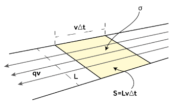 ...and volume current densities \[\mathbf{j}=\rho\mathbf{v}\] 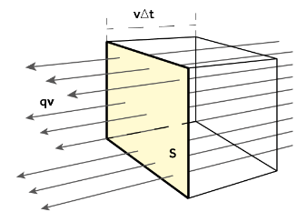 Summary:
Charge
Units
Current
Units
Line \(\lambda\)
\(\textrm{Cm}^{-1}\)
\(\mathbf{I}=\lambda\mathbf{v}\)
Amps: \(\textrm{A}\)
Surface \(\sigma\)
\(\textrm{Cm}^{-2}\)
\(\mathbf{K}=\sigma\mathbf{v}\)
Amps per length: \(\textrm{Am}^{-1}\)
Volume \(\rho\)
\(\textrm{Cm}^{-3}\)
\(\mathbf{j}=\rho\mathbf{v}\)
Amps per area: \(\textrm{Am}^{-2}\)
Field Due to a Ring of Charge
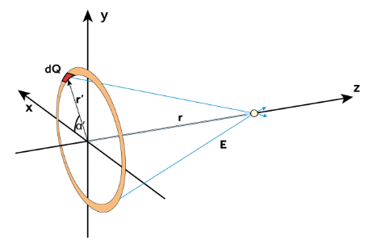 The ring has a total charge, \(Q\), and radius \(a\), thus the line density is \(\lambda=\frac{Q}{2\pi a}\) from the charge over the perimeter of a circle. Although the problem has cylindrical geometry, we can consider the problem somewhat simply in Cartesian geometry. In this case, the position vectors, \(r\), to the point at which we calculate the field, and \(r′\), to the point of the patch on the ring are given by \[\begin{align}&\mathbf{r}=(0,0,z)\\ &\mathbf{r}'=(a\cos\alpha',a\sin\alpha',0)\\\end{align}\] hence we can substitute these into the continuum equations \[\mathbf{E}(\mathbf{r})=\frac{\lambda}{4\pi\epsilon_0}\frac{a}{(a^2+z^2)^{3/2}}\int_0^{2\pi}(-a\cos\alpha'\mathbf{\hat{i}}-a\sin\alpha'\mathbf{\hat{j}}+z\mathbf{\hat{k}})\;d\alpha'\] The integrals result in the \(E_x\) and \(E_y\) components being zero (this is the symmetry condition we could have used to neglect these terms from the outset) so then \[\begin{align} \mathbf{E}(z)&=\frac{1}{4\pi\epsilon_0}\frac{2\pi a\lambda z}{(a^2+z^2)^{3/2}}\mathbf{\hat{k}}\\ &=\boxed{\frac{1}{4\pi\epsilon_0}\frac{Qz}{(a^2+z^2)^{3/2}}\mathbf{\hat{k}}} \end{align}\]
The Biot-Savart Law
Imagine a length of wire and split it up into segments \(\Delta\ell\) If we consider a segment located a distance \(r'\) from the origin, then the magnetic field of that segment can be written as \[\Delta\mathbf{B}(\mathbf{r})=\frac{\mu_0}{4\pi}\frac{I\Delta\boldsymbol{\ell}'\times(\mathbf{r}-\mathbf{r}')}{|\mathbf{r}-\mathbf{r}'|^3}\] In the limit of an infinitesimal length \[d\mathbf{B}(\mathbf{r})=\frac{\mu_0}{4\pi}\frac{Id\boldsymbol{\ell}'\times(\mathbf{r}-\mathbf{r}')}{|\mathbf{r}-\mathbf{r}'|^3}\] Again, the awkward notation \(|r-r'|\) is there because we are wanting to calculate the field at a position \(r\) but the current elements are located at a range of points \(r'\). We can use continuum of current with this law to derive two more forms: \[\begin{align} \textrm{Surface Current:}\qquad&\mathbf{B}(\mathbf{r})=\frac{\mu_0}{4\pi}\frac{\mathbf{K}(\mathbf{r}')\times(\mathbf{r}-\mathbf{r}')}{|\mathbf{r}-\mathbf{r}'|^3}dS'\\ \textrm{Volume Current:}\qquad&\mathbf{B}(\mathbf{r})=\frac{\mu_0}{4\pi}\frac{\mathbf{j}(\mathbf{r}')\times(\mathbf{r}-\mathbf{r}')}{|\mathbf{r}-\mathbf{r}'|^3}d\tau'\\ \end{align}\]
Lorentz in Differential Form
We have \[d\mathbf{F}=\mathbf{E}\;dq+(\mathbf{v}\times\mathbf{B})\;dq\] we can relate \(\rho d\tau=dq\) and \(\mathbf{j}=\rho\mathbf{v}\) to find \[d\mathbf{F}=\rho\mathbf{E}d\tau+(\mathbf{j}\times\mathbf{B})d\tau\] We can calculate power as we did at the beginning of the section \[\frac{dW}{dt}=\int d\mathbf{F}\cdot\mathbf{v}=\int\rho\mathbf{E}\cdot\mathbf{v}\;d\tau+(\mathbf{j}\times\mathbf{B})\cdot\mathbf{v}\;d\tau\] \[\underbrace{\rho\mathbf{E}\cdot\mathbf{v}\;}_1+\underbrace{(\mathbf{j}\times\mathbf{B})\cdot\mathbf{v}}_2\;\iff\underbrace{\mathbf{j}\cdot\mathbf{E}}_1+\underbrace{\rho(\mathbf{v}\times\mathbf{B})\cdot\mathbf{v}}_2\] Term 2 here becomes zero as it is the dot product of \(\mathbf{v}\) with a vector perpendicular to \(\mathbf{v}\) (from the cross product). Hence, \[\frac{dW}{dt}=\int\mathbf{j}\cdot\mathbf{E}\;d\tau\] What is the physical meaning of \(\mathbf{j}d\tau\) ? We can split the volume into the product of a surface area element and a length element: \(d\tau =d\mathbf{S}\cdot d\boldsymbol{\ell}\) where the two vectors are in fact in the same direction (imagine a square being pushed a certain distance perpendicular to its surface). Therefore, we can write \(\mathbf{j}(d\mathbf{S}\cdot d\boldsymbol{\ell})\). Using the vector triple product we can write \[\mathbf{B}(\mathbf{A}\cdot\mathbf{C})=\mathbf{A}\times(\mathbf{B}\times\mathbf{C})+\mathbf{C}(\mathbf{A}\cdot\mathbf{B})\] so we find that \[\mathbf{j}(d\mathbf{S}\cdot d\boldsymbol{\ell})=d\mathbf{S}\times(\mathbf{j}\times d\boldsymbol{\ell})+d\boldsymbol{\ell}(d\mathbf{S}\cdot\mathbf{j})\] The first term is zero since the current density and line element are parallel so \[\mathbf{j}(d\mathbf{S}\cdot d\boldsymbol{\ell})=d\boldsymbol{\ell}(d\mathbf{S}\cdot\mathbf{j})\] rewriting: \[\boxed{\mathbf{j}\;d\tau=I\; d\boldsymbol{\ell}}\] So finally, we can rewrite the \(\mathbf{j}\times\mathbf{B}\) force: \[d\mathbf{F}=(\mathbf{j}\times\mathbf{B})d\tau=I(d\boldsymbol{\ell}\times\mathbf{B})\] This expression gives us the force (not per unit volume!) acting on a small element of current in a magnetic field.
Reminder of Rotational Motion
We have \[\begin{align} &\mathbf{v}=\boldsymbol{\omega}\times\mathbf{r}\\ &\mathbf{L}=\mathbf{r}\times m\mathbf{v}\\ &\mathbf{T}=\mathbf{r}\times\mathbf{F}\implies d\mathbf{T}=\mathbf{r}\times d\mathbf{F} \end{align}\]
Gauss's and Ampere's Law
Gauss's Law
Gauss’s Law relates the flux of the electric field through a closed surface to the charge enclosed by that surface. \[\boxed{\oint_S\mathbf{E}\cdot d\mathbf{S}=\frac{q}{\epsilon_0}=\frac{1}{\epsilon_0}\int_\tau\rho(\mathbf{r}')\;d\tau'}\]
Gaussian Surfaces
We call the surface a Gaussian surface which is an imaginary surface that not only gives us the surface we integrate the electric field over, but also the volume that we integrate the charge over. o in Gauss’s Law (in the form above) it is used in two places:
It specifies the surface that we integrate the electric field over (LHS)
It specifies the volume that we integrate the charge over (RHS)
Example: Charged Infinite Plane
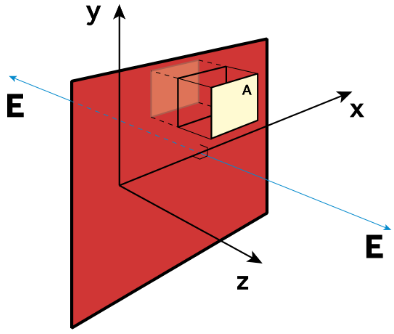 Since the charge density doesn’t depend on \(x\) or \(y\) then we might only expect the electric field to be a function of \(z\). We need a Gaussian surface where \(\mathbf{E}\cdot dS\) is constant across the surface so we can trivially remove it from the integral, or where it is zero and hence does not contribute to the flux Since the field is only in \(z\), we only need to consider the the ‘top’ and ‘bottom’ of a box‑like/pillbox Gaussian surface. Let’s give this an area, \(A\), then the flux through the top and bottom is \(2E_zA\) and the Gaussian surface encloses a charge \(\sigma A\), and so \[E_z=\frac{\sigma}{2\epsilon_0}\] But we still need to do some adjustment ‑ Gauss’s law only tells us about the flux, we don’t have sign information. We might expect that the electric field points away from the sheet on both sides, which this doesn’t. The solution is that we need to add something to reflect that \(E_z(z\lt 0)\lt 0\) and \(E_z(z\gt 0)\gt 0\), and we can do this with the sign function \[\textrm{sgn}(z)=\left\{\begin{array}{c l} 1 & \textrm{for}\;z\gt 0\\ -1 & \textrm{for}\;z\lt 0\\ 0 & \textrm{for}\;z=0 \end{array}\right.\] (this function is an odd function). \[\mathbf{E}(z)=\frac{\sigma}{2\epsilon_0}\textrm{sgn}(z)\;\mathbf{\hat{k}}\] his now satisfies our demands. \(\mathbf{E}\) points away from the sheet on both sides.
Example: Field of a Finite Charged Rod
Let us now consider the field due to a charged rod of finite length, \(2b\), with a constant charge density \(\lambda\). We need to fall back on the general electrostatic equation. \[\mathbf{E}(\mathbf{r})=\frac{1}{4\pi\epsilon_0}\int_l\lambda(\mathbf{r'})\frac{\mathbf{r}-\mathbf{r}'}{|\mathbf{r}-\mathbf{r}'|^3}d\ell'\]If we place the centre of the rod at \(z=0\) then the rod has
No translational symmetry in \(z\) (field depends on \(z\)).
Rotational symmetry in \(\phi\) (about \(z\)): we can rotate the rod about it’s axis and the charge distribution looks the same. This tells us that the electric field does not depend on \(\phi\).
So by symmetry we can say that we expect the field to be of the form: \[\mathbf{E}(\mathbf{r})=E_s(s,z)\mathbf{\hat{e}}_s+E_z(s,z)\mathbf{\hat{e}}_z\] Starting with the general expression for Coulomb’s law in Cartesian geometry: \[\mathbf{E}(\mathbf{r})=\frac{\lambda}{4\pi\epsilon_0}\int^b_{-b}\frac{x\mathbf{\hat{i}}+y\mathbf{\hat{j}}+(z-z')\mathbf{\hat{k}}}{[x^2+y^2+(z-z')^2]^{3/2}}\;dz'\] Since we still have axial symmetry (although not perfect cylindrical symmetry) we can collapse \(x^2+y^2=s^2\) (distance from the rod) and \(x\mathbf{\hat{i}}+y\mathbf{\hat{j}}=s\mathbf{\hat{e}}_s:\) \[\mathbf{E}(\mathbf{r})=\frac{\lambda}{4\pi\epsilon_0}\int^b_{-b}\frac{s\mathbf{\hat{e}}_s+(z-z')\mathbf{\hat{e}}_z}{[s^2+(z-z')^2]^{3/2}}\;dz'\] Hence we can split this integral into the radial and axial components: \[\begin{align} &E_s=\frac{\lambda}{4\pi\epsilon_0}\int^b_{-b}\frac{s}{[s^2+(z-z')^2]^{3/2}}\;dz'\\ &E_z=\frac{\lambda}{4\pi\epsilon_0}\int^b_{-b}\frac{z-z'}{[s^2+(z-z')^2]^{3/2}}\;dz' \end{align}\] Thankfully, the integrals can be solved analytically. (Not examinable) Using a substitution \(u=s^2+(z-z')^2\) we find: \[E_z=\frac{\lambda}{4\pi\epsilon_0}\left[\frac{1}{\sqrt{s^2+(z-b)^2}}-\frac{1}{\sqrt{s^2+(z+b)^2}}\right]\] Using a substitution \(u=z-z'\) and then using another substitution \(w=\tan^{-1}(u/s)\implies s\tan w=u\), then some geometry: \[E_s=\frac{\lambda}{4\pi\epsilon_0}\left[\frac{z+b}{\sqrt{s^2+(z+b)^2}}-\frac{z-b}{\sqrt{s^2+(z-b)^2}}\right]\]
Gauss's Law in Differential Form
From PHYS115, we know the Divergence Theorem, which relates the flux of a vector field through a closed surface to the divergence of the field enclosed by the surface \[\oint_S\mathbf{A}\cdot d\mathbf{S}=\int_\tau\nabla\cdot\mathbf{A}\;d\tau'\] We can use this to replace the LHS of Gauss's law with the volume integral over the divergence of the electric field: \[\int_\tau\nabla\cdot\mathbf{E}\;d\tau'=\frac{1}{\epsilon_0}\int_\tau\rho(\mathbf{r}')\;d\tau'\]Since the integration is over the same volume with the same differential element, we can equivalently write: \[\int_\tau\left[\nabla\cdot\mathbf{E}-\frac{1}{\epsilon_0}\rho(\mathbf{r}')\;\right]d\tau'=0\] So therefore the integrand must be zero and hence: \[\boxed{\nabla\cdot\mathbf{E}=\frac{\rho(\mathbf{r}')}{\epsilon_0}}\] This is the differential form of Gauss’s law and the first of Maxwell’s equations that we have derived.
Divergence in Electrostatic field, and Coulomb’s law
If we were to calculate the divergence of the electric field from coulombs law (in spherical coordinates): \[\mathbf{E}=\frac{Q}{4\pi\epsilon_0r^2}\] we find that \[\nabla\cdot\mathbf{E}=\frac{1}{r^2}\frac{\partial}{\partial r}\left(r^2 \frac{Q}{4\pi\epsilon_0r^2}\right)=0\;??\] Divergence is a point measurement. The only place this is non‑zero is at the origin where the (infinitely small) charge is located. This is not a solenoidal field, since the divergence is not zero everywhere. If we use the integral form to examine the divergence we would find that the field does indeed have divergence.
Gauss’s Law for Magnetic Fields (No Monopoles)
If we think about a bar magnet, there are field lines emerging from the ‘north pole’ but they return to the ‘south pole’ so the net magnetic flux through a closed surface around a bar magnetic is zero. This gives us Gauss’s Law for magnetic fields: \[\oint_S\mathbf{B}\cdot d\mathbf{S}=0\] using the Divergence Theorem, we can then replace the LHS of Gauss’s Law with the volume integral over the divergence of the magnetic field: \[\int_\tau\nabla\cdot\mathbf{B}\;d\tau=0\] Therefore, the integrand must be zero and hence: \[\boxed{\nabla\cdot\mathbf{B}=0}\] This is the differential form of Gauss’s Law for Magnetic Fields and the second of Maxwell’s equations that we have derived.
Ampere's Law
From PHYS103, we know Ampere's Law which is an alternative way to calculate a magnetic field from doing the Biot‑Savart integral: \[\oint\mathbf{B}\cdot d\boldsymbol{\ell}=\mu_0I\] ...but we now know that current could be found by integrating the current density over a surface: \(I=\int\mathbf{j}\cdot d\mathbf{S}.\) Therefore, the form of Ampere's Law we will use is: \[\boxed{\oint\mathbf{B}\cdot d\boldsymbol{\ell}=\mu_0\int\mathbf{j}\cdot d\mathbf{S}}\] Note the similarity to Gauss's Law \[\begin{align} G.L:\qquad & \oint_S\mathbf{E}\cdot d\mathbf{S}=\frac{1}{\epsilon_0}\int_\tau\rho(\mathbf{r})d\tau\\ A.L:\qquad & \oint\mathbf{B}\cdot d\boldsymbol{\ell}=\mu_0\int_S\mathbf{j}\cdot d\mathbf{S} \end{align}\] Gauss's Law:
LHS - Surface integral of electric field, over Gaussian surface.
RHS - Volume integral of charge density inside Gaussian surface.
Ampere's Law:
LHS - Line integral of magnetic field around Amperian loop.
RHS - Surface integral of current density over surface bounded by Amperian loop.
If we want to apply Ampere's Law to calculate a magnetic field then we need to identify a closed line/curve (the Amperian loop) to integrate the magnetic field along and that closed loop will define a surface ‑ this surface is the one we will calculate the current through. Because the dot product removes the vector information we need to consider the symmetry to figure out the directions.
Ampere's Law in Differential Form
Similar to Gauss’s Law, Ampere's law in the form above has removed information about the vector direction and so we need to apply additional analysis to figure out the directions. We apply Stokes’ Theorem to transform the line integral into a surface integral: \[\int_S(\nabla\times\mathbf{B})\cdot d\mathbf{S}=\oint_C\mathbf{B}\cdot d\boldsymbol{\ell}\] therefore: \[\int_S(\nabla\times\mathbf{B})\cdot d\mathbf{S}=\mu_0\int_S\mathbf{j}\cdot d\mathbf{S}\] Thus, we can compare the two integrands: \[\nabla\times\mathbf{B}=\mu_0\mathbf{j}\] This is Ampere's law in differential form.
Electrostatics
Electric Potential
Let’s consider the field of our infinite sheet again: \(E_z=\frac{\sigma}{2\epsilon_0}\). If the sheet is positively charged, \(\sigma \gt 0\) and we bring a positive charge, \(q\), from \(z=d\) to \(z=0\), then we have had to do work on the charge against the field of the charged sheet: the change in energy is simply force times distance: \(qE_z d=\frac{qd\sigma}{2\epsilon_0}\). More formally, we need to integrate the force \(F\), along the path, \(C\), of the charge \(q\): \[W=\int_C\mathbf{F}\cdot d\boldsymbol{\ell}\] Sign convention: generally if the force and displacement are in the same direction
Positive: if the fields do work on the charged particles then the work done is positive. Then the system has released energy.
Negative: if we do work on the charged particles against the fields. Then we have put energy into the system.
By way of an example. In the figure below we have a charge \(q\) initially located at point \(\mathbf{a}=a_x\mathbf{\hat{i}}+a_y\mathbf{\hat{j}}\) and it moves to point \(\mathbf{b}=b_x\mathbf{\hat{i}}+b_y\mathbf{\hat{j}}\) where \(b_x\lt a_x\) in the electrostatic field of a plane \(\mathbf{E}=\frac{\sigma}{2\epsilon_0}\mathbf{\hat{i}}\). Doing the integration: \[\begin{align} W&=\int^\mathbf{b}_\mathbf{a}q\mathbf{E}\cdot d\boldsymbol{\ell}\\ &=\int^\mathbf{b}_\mathbf{a}\frac{q\sigma}{2\epsilon_0}\mathbf{\hat{i}}\cdot(dx\;\mathbf{\hat{i}}+dy\;\mathbf{\hat{j}})\\ &=\int^{b_x}_{a_x}\frac{q\sigma\;dx}{2\epsilon_0}\\ &=\frac{q\sigma}{2\epsilon_0}(b_x-a_x) \end{align}\] Since \(b_x\lt a_x\) the work done is negative. Hence we have had to do work on the charged particle against the field. It only depended on the start and end positions relative to the field. If those points were the same (then the line integral would be closed \(\oint\mathbf{E}\cdot d\boldsymbol{\ell}\)) then the work done would be zero. We can define the potential energy, \(U\) in terms of a potential \(V\) and the charge \(q\) in that potential: \[U(\mathbf{r})=qV(\mathbf{r})\] where \(V(\mathbf{r})\) is a scalar field known as the potential and has units of volts \([\textrm{V}]=[\textrm{J C}^{-1}]\) Because the electric field is conservative (irrotational and simply connected) we can write the work done as the difference in potential energy between two points \[W=-\Delta U.\] Thus we could also write \[\frac{W}{q}=V(\mathbf{b})-V(\mathbf{a}).\] When we consider the electric field a little more, we also find two key equations \[\boxed{\mathbf{E}=-\nabla V}\qquad\qquad\boxed{\mathbf{E}\cdot d\boldsymbol{\ell}=-dV}\] There is a final important remark to make: potentials are not unique. Because the electric field is found from the gradient of a potential we can take a potential like \(V=\frac{k}{r}\) and add a constant to it to give \(V=\frac{k}{r}+c\) and when we take the grad we end up with exactly the same electric field.
Using \(V\) to find \(\mathbf{E}\)
So this tells us that if we can work out \(V(r)\) then we can easily find the electric field by taking the gradient. For example, the potential due to an isolated point charge \(q\) located at \(r_0\) is \[V(\mathbf{r})=\frac{q}{4\pi\epsilon_0}\frac{1}{|\mathbf{r}-\mathbf{r}_0|}.\] Using the relationship \[-\nabla\left(\frac{1}{|\mathbf{r}-\mathbf{r}_0|}\right)=\frac{\mathbf{r}-\mathbf{r}_0}{|\mathbf{r}-\mathbf{r}_0|^3},\] we can easily obtain the electric field of a point charge. But how do we find V in the first place? We can substitute \(\mathbf{E}=-\nabla V\) into Gauss's law, to find \[\begin{align} -\nabla\cdot\nabla V=\frac{\rho}{\epsilon_0}\\ \boxed{\nabla^2V=-\frac{\rho}{\epsilon_0}} \end{align}\] This is Poisson's equation, and if we are in a region where the charge density is zero, it becomes Laplace's equation.
Example: Potential of a Point Charge
Now, we are only dealing with a point charge, located at \(r=0,\) where the charge density is non‑zero, but zero everywhere else, and we don’t really care about the field at the origin, we want it at some distance from the charge. So really, we need to solve Laplace’s equation and it makes sense to work in spherical coordinates. \[\nabla^2V=\frac{1}{r^2}\frac{\partial}{\partial r}\left(r^2\frac{\partial V}{\partial r}\right)+\frac{1}{r^2\sin\theta}\frac{\partial}{\partial\theta}\left(\sin\theta\frac{\partial V}{\partial\theta}\right)+\frac{1}{r^2\sin^2\theta}\frac{\partial^2 V}{\partial\phi^2}=0\] From symmetry, we can translate \((\theta,\phi)\) and the point charge looks the same, therefore the potential is independent of angle. So, \(V=V (r)\). Therefore \[\frac{1}{r^2}\frac{d}{d r}\left(r^2\frac{dV}{dr}\right)=0,\] thus \[\begin{align} &\frac{d}{d r}\left(r^2\frac{dV}{dr}\right)=0\\ &\implies\frac{dV}{dr}=\frac{c_1}{r^2}\\ &V(r)=-\frac{c_1}{r}+c_2 \end{align}\] where \(c_1\) and \(c_2\) are constants of integration, to be found via boundary conditions.
One boundary condition is that the potential tends to zero at infinity (\(V(\infty)=0\)). This implies that \(c_2=0\)
We need some other boundary condition to fix \(c_1\).
We can do this from the Coulomb force, by computing the electric field from the potential, and then doing the comparison with \(\mathbf{E}=(1/4\pi\epsilon_0)(Q/r^2)\mathbf{\hat{e}}_r\). \[\mathbf{E}=-\nabla V=-\frac{dV}{dr}\mathbf{\hat{e}}_r=-\frac{c_1}{r^2}\mathbf{\hat{e}}_r,\] hence, \[c_1=-\frac{Q}{4\pi\epsilon_0}\implies V(r)=-\frac{Q}{4\pi\epsilon_0}\frac{1}{r}\] The two types of boundary conditions we have applied are Dirichlet then Neumann B.C's respectively.
Energy Density of the Electrostatic Field
If we consider a pair of oppositely charged infinite sheets and consider them to be collocated, what happens if we try to separate them? We will have to do work on the system in separating the sheets by the distance \(d\). The energy actually goes into the electric field; it is stored in the electric field between the planes. So how much energy has been stored? Clearly, if the sheets are infinite, then the amount of energy is likely to be infinite, so let’s consider the energy density between the plates, e.g., the energy per unit volume. Consider a patch of the (top) \(z=d\) sheet with area \(A\) and charge density \(\sigma\) in the potential of the bottom \(z=0\) sheet. The potential at the location of the patch is \[V_0(z)=-\frac{\sigma d}{2\epsilon_0},\] then the potential energy is \[U=A\sigma\frac{\sigma d}{2\epsilon_0},\] where \(Ad=\tau\) is the volume of the patch over a distance \(d\). Hence the energy per unit volume is \[u=\frac{U}{\tau}=\frac{\sigma^2}{2\epsilon_0}\] Note how the energy density is spatially uniform. One obtains the same result by looking at a patch on the opposite sheet. Notice also that the energy is proportional to the square of the electric field strength in this configuration \[\mathbf{E}\cdot\mathbf{E}=\frac{\sigma^2}{\epsilon_0^2}\implies u=\frac{\epsilon_0}{2}\mathbf{E}\cdot\mathbf{E}=\frac{\epsilon_0}{2}\mathbf{E}^2\] The density of energy stored in the electric field is proportional to the square of the field strength.
Electric Dipoles
We define the electric dipole as consisting of two equal but opposite charges, \(+q\) and \(−q\), separated by a distance \(d\) with a vector \(\mathbf{d}\) pointing from \(−q\) to \(+q\) with a length \(d\). We work in spherical coordinates and place the charges about the \(X\)−\(Y\) plane along the \(Z\) axis. Vectors \(\mathbf{R}_1\) and \(\mathbf{R}_2\) point from the charge \(+q\) and \(−q\), respectively, to a point \(r\). 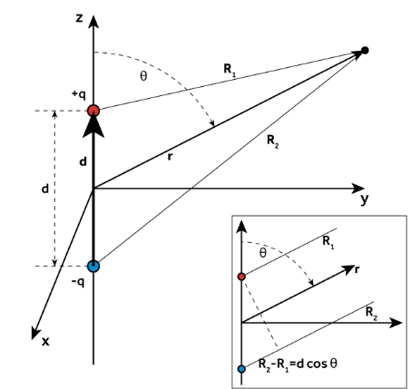 From the geometry: \[\mathbf{R}_1=\mathbf{r}-\frac{\mathbf{d}}{2}\qquad\qquad \mathbf{R}_2=\mathbf{r}+\frac{\mathbf{d}}{2}\] We can find the potential by the superposition of two point charge potentials: \[V(\mathbf{r})=\frac{q}{4\pi\epsilon_0}\frac{1}{|\mathbf{R}_1|}-\frac{q}{4\pi\epsilon_0}\frac{1}{|\mathbf{R}_2|}=\frac{q}{4\pi\epsilon_0}\frac{|\mathbf{R}_2|-|\mathbf{R}_1|}{|\mathbf{R}_1||\mathbf{R}_2|}\] From the figure, we can see that at large distances, \(|\mathbf{R}_2|−|\mathbf{R}_1|=d\cos\theta=\mathbf{d}\cdot\mathbf{\hat{e}}_r\) . Also at large distances, \(|\mathbf{R}_2||\mathbf{R}_1|\approx r^2\). Then: \[V(\mathbf{r})=\frac{q}{4\pi\epsilon_0}\frac{d\cos\theta}{r^2}=\frac{q}{4\pi\epsilon_0}\frac{\mathbf{d}\cdot\mathbf{\hat{e}}_r}{r^2}\] We can define the electric dipole moment as: \[\boxed{\mathbf{p}=q\mathbf{d}}\] hence \[V(\mathbf{r})=\frac{\mathbf{p}\cdot\mathbf{\hat{e}}_r}{4\pi\epsilon_0r^2}=\frac{\mathbf{p}\cdot\mathbf{r}}{4\pi\epsilon_0r^3}\] We take the grad in spherical coordinates to compute the electric field \[\nabla V=\frac{\partial V}{\partial r}\mathbf{\hat{e}}_r+\frac{1}{r}\frac{\partial V}{\partial\theta}\mathbf{\hat{e}}_\theta+\frac{1}{r\sin\theta}\frac{\partial V}{\partial\phi}\mathbf{\hat{e}}_\phi\] Since the dipole has azimuthal symmetry, \(\partial_\phi=0\) \[\mathbf{E}=\frac{2qd\cos\theta}{4\pi\epsilon_0r^3}\mathbf{\hat{e}}_r+\frac{2qd\sin\theta}{4\pi\epsilon_0r^3}\mathbf{\hat{e}}_\theta=\frac{p}{4\pi\epsilon_0r^3}(2\cos\theta\;\mathbf{\hat{e}}_r+\sin\theta\;\mathbf{\hat{e}}_\theta)\]
Energy of Dipoles in E-Fields
We describe the external field via a potential, \(V\), and the potential energy of the dipole in the field is simply the sum of the potential energies of the two charges that comprise the dipole. We let the positions of the positive and negative charges be \(\mathbf{r}_1\) and \(\mathbf{r}_2\) respectively s.t. \(d=\mathbf{r}_1−\mathbf{r}_2\). \[U=U_1+U_2=qV(\mathbf{r_1})-qV(\mathbf{r}_2)\] Let us assume that the distance between the charges is small compared to the distances to the charges involved in producing the electric field, then we can expand \(V\) about one of the charges and retain up to the linear terms. \[V(\mathbf{r}_1)\approx V(\mathbf{r}_2)+\mathbf{d}\cdot\nabla V(\mathbf{r}_2)\] therefore \[U\approx q\mathbf{d}\cdot\nabla V(\mathbf{r}_2)=\mathbf{p}\cdot\nabla V(\mathbf{r}_2)\] In the limit \(d\to0\) (but s.t., the charges increase s.t. \(\mathbf{p}\) stays constant) we have an ideal dipole. If there is some real non‑zero \(d\) then we have a physical dipole. Note: in this limit it doesn’t matter about which charge we expand the potential (or even expanding about the centre). We can now write: \[U=-\mathbf{p}\cdot\mathbf{E}\] The potential energy is a minimum when the dipole moment is aligned with the electric field. So if a dipole can rotate, the dipole will re-orientate itself so that the dipole moment is orientated along the field.
Force and Torque on Dipoles in an E-Field
In a non‑uniform electric field the Coulomb force on each charge in a dipole will be different and therefore the dipole will experience a net force. Let’s represent the net force by \(\mathbf{F}\) and the force and electric fields on the positive and negative charges by \(\mathbf{F}_+=q\mathbf{E}_+\) and \(\mathbf{F}_−=−q\mathbf{E}_−\): \[\mathbf{F}=\mathbf{F}_++\mathbf{F}_-=q\Delta\mathbf{E}\] Assuming that the change in the electric field between the two charges is approximately linear then we could write: \[\Delta E_i=E_{i+}-E_{i-}=\nabla E_i\cdot\mathbf{d}\] where \(i\) can be any of the three coordinate axes \((x,y,z)\). We can write this more compactly as: \[\Delta\mathbf{E}=\mathbf{d}\cdot\nabla\mathbf{E},\] hence \[\mathbf{F}=q\mathbf{d}\cdot\nabla\mathbf{E}=\mathbf{p}\cdot\nabla\mathbf{E}\] This looks kind of weird and probably goes against what you know about only apply grad to a scalar to give a vector. It might make it easier to think of this as just applied to different components of \(\mathbf{E}\) ‑ after all, these are scalars and we can take the grad of them.
Electric Fields in Media
So far we have implicitly assumed a vacuum by using the permittivity of free space, \(\epsilon_0\). This is as the permittivity of air is similar to that of a vacuum. In general, we must consider the permittivity of the medium, \(\epsilon\), and so we must use \(\epsilon\equiv\epsilon_r\epsilon_0\) in our equations of electromagnetism, where \(\epsilon_r\) is the relative permittivity, defined relative to vacuum, s.t., \(\epsilon_r=1\), for a vacuum. The relative permittivity characterises the ability of the medium to affect electric fields; specifically, the ability of an electric field to polarise a medium. From a classical electromagnetic viewpoint we can classify media into three types:
Dielectrics ‑ where there are charges, but they are somehow ‘frozen’ or ‘tied’ into place and so cannot freely move within the medium. Examples: ceramics, mica, paper, glass, distilled water, dry air.
Conductors ‑ where charges are able to freely move within the medium, all the way to the boundaries.
Semiconductors ‑ where charges can move, but not entirely without restriction.
Dielectrics
Polarisation
In its rest state, a dielectric is usually neutral and creates no electric field ‑ but this does not mean that it is immune to the effects of an electric field. As we saw with an electric dipole, being neutral does not necessarily mean that something cannot react to an externally imposed electric field. This mechanism is polarisation. What happens to the dipoles in the dielectric when we apply the electric field? We can consider two different (not necessarily mutually‑exclusive) reactions:
Stretching: the positive charges shift slightly in one direction, the negative charges shifting slightly in the opposite direction. Thus, this generates an induced dipole moment by producing a large number of aligned dipoles that fill the medium. We might expect that the induced dipole moment increases linearly with the applied electric field, \(\mathbf{E}\).
Rotating: in a normal state, the dipoles in a medium are not aligned so the net dipole moment is zero. In the applied electric field the individual dipoles will try to align with the applied electric field (trying to reach a minimum energy state, recall \(U=-\mathbf{p}\cdot\mathbf{E}\)). Again, we might expect this effect to increase linearly with the applied electric field, \(\mathbf{E}\).
Let us define the polarisation, \(\mathbf{P}\) as the dipole moment per unit volume. We have our linear response s.t., the polarisation is given by the applied electric field times a constant, \(\chi\), called the electric susceptibility. \[\mathbf{P}=\chi\epsilon_0\mathbf{E}\] Dipoles have an electric field associated with them, so associated with the polarisation there will be an electric field that may act to ‘short out’ or oppose the applied electric field in the medium.
Free and Bound Charge Density
Earlier, we derived the potential of a dipole located at the origin \[V(\mathbf{r})=\frac{\mathbf{p}\cdot\mathbf{r}}{4\pi\epsilon_0r^3}\] Polarisation is defined as dipole moment per unit volume, so if we have some differential volume element \(d\tau\) then the differential dipole moment is \(dp=Pd\tau\) , hence, by superposition, the potential of the whole volume is: \[V(\mathbf{r})=\frac{1}{4\pi\epsilon_0}\int_\tau\frac{\mathbf{r}-\mathbf{r}'}{|\mathbf{r}-\mathbf{r}'|^3}\cdot\mathbf{P}(\mathbf{r}')d\tau'\] Using our trick to change the position to a gradient: \[\frac{\mathbf{r}-\mathbf{r}'}{|\mathbf{r}-\mathbf{r}'|^3}=\nabla'\left(\frac{1}{|\mathbf{r}-\mathbf{r}'|}\right)\] We find (after swapping the order of the dot product, since dot products commute): \[V(\mathbf{r})=\frac{1}{4\pi\epsilon_0}\int_\tau\mathbf{P}(\mathbf{r})\cdot\nabla'\left(\frac{1}{|\mathbf{r}-\mathbf{r}'|}\right)d\tau'\] The integrand is the dot product of a vector field with the grad of a scalar field: \(\mathbf{A}\cdot\nabla f\) and so we can use the vector identity \(\nabla\cdot(f\mathbf{A})=f(\nabla\cdot\mathbf{A})+\mathbf{A}\cdot(\nabla f)\) to sort this out. \[V(\mathbf{r})=\frac{1}{4\pi\epsilon_0}\int\nabla'\cdot\left(\frac{\mathbf{P}(\mathbf{r}')}{|\mathbf{r}-\mathbf{r}'|}\right)d\tau'-\frac{1}{4\pi\epsilon_0}\int\frac{1}{|\mathbf{r}-\mathbf{r}'|}\nabla'\cdot\mathbf{P}(\mathbf{r}')d\tau'\] The first term is the volume integral of a divergence, so we can transform this into an integral over the surface of the volume with the Divergence Theorem: \[V(\mathbf{r})=\frac{1}{4\pi\epsilon_0}\oint\cdot\left(\frac{\mathbf{P}(\mathbf{r}')}{|\mathbf{r}-\mathbf{r}'|}\right)\cdot d\mathbf{S}'-\frac{1}{4\pi\epsilon_0}\int\frac{1}{|\mathbf{r}-\mathbf{r}'|}\nabla'\cdot\mathbf{P}(\mathbf{r}')d\tau'\] The potential of the medium that has been polarised with a polarisation, \(\mathbf{P}\), has two contributions. Both contributions have \(|\mathbf{r}−\mathbf{r}'|\) in the denominator, suggesting some sort of point‑like ‘elementary charge’ potential. The dimensions of the first term is dipole moment per unit area, suggesting some sort of ‘surface density’. The second term can be compared with Gauss’s Law in differential form and so the divergence can be written as some sort of ‘volume charge density’ ‑ compare with the surface/volume charge density expressions given earlier in the superposition section. We call these bound charges to indicate that these charges are still bound to their dipoles, and are not free charges. So, let us define the bound surface charge density, \(\sigma_b\), and bound volume charge density, \(\rho_b\) as: \[\sigma_b\equiv\mathbf{P}\cdot\mathbf{\hat{n}}=\mathbf{P}\cdot\frac{d\mathbf{S}'}{dS'}\] \[\rho_b\equiv-\nabla\cdot\mathbf{P}\] and substituting \[V(\mathbf{r})=\frac{1}{4\pi\epsilon_0}\oint\cdot\frac{\sigma_b(\mathbf{r}')}{|\mathbf{r}-\mathbf{r}'|}dS'+\frac{1}{4\pi\epsilon_0}\int\frac{\rho_b(\mathbf{r}')}{|\mathbf{r}-\mathbf{r}'|}d\tau'\] So now we have transformed some more abstract notion of many infinitesimal dipoles to more familiar notions of effective surface and volume charge densities associated with the polarisation. These are real distributions of charges and not fictitious. Therefore, in response to an applied electric field a linear dielectric will polarise, producing its own electric field ‑ a polarisation field, \(\mathbf{P}\). The polarisation field is effectively the same as a potential created by a volume distribution of charges with density, \(\rho_b\), plus a surface distribution of charges on the boundary of the volume.
Electric Displacement and Relative Permittivity
There is nothing magical about the polarisation field, it is an electric field that follows Maxwell’s equations: \[\nabla\cdot\mathbf{P}=-\rho_b\] then by superposition: \[\nabla\cdot\mathbf{E}=\frac{\rho+\rho_b}{\epsilon_0}\] where, \(\rho\), is our usual ‘free’ charge density and \(\rho_b\) is the bound charge density. Since we have assumed a linear dielectric: \[-\epsilon_0\chi\nabla\cdot\mathbf{E}=\rho_b\] Then substituting back in to eliminate the bound charge density: \[\begin{align} &\nabla\cdot\mathbf{E}=\frac{\rho-\epsilon_0\chi\nabla\cdot\mathbf{E}}{\epsilon_0}\\ &\implies\nabla\cdot\mathbf{E}=\frac{\rho}{\epsilon_0(1+\chi)} \end{align}\] So we can see that Gauss’s Law is just modified by an extra constant ‑ the relative permittivity. \[1+\chi=\epsilon_r\] We define the electric displacement field: \[\mathbf{D}=\epsilon_0\mathbf{E}+\mathbf{P}=\epsilon_0(1+\chi)\mathbf{E}=\epsilon\mathbf{E}\] With this definition, Gauss’s Law can be rewritten: \[\nabla\cdot\mathbf{D}=\rho\]
Conductors
If we apply an electric field to a conductor then at least a subset of the charges (the free charges) are able to move more‑or‑less freely under the influence of this applied electric field. A perfect conductor would have an unlimited supply of free charges but of course in a real conductor the number of charges is limited. Furthermore, in real conductors the charges experience some resistance to this motion thus leading to the idea of electrical resistivity. We can make several useful statements about the behaviour of (ideal) conductors, which follow from Maxwell’s equations
The electric field inside a conductor is zero.
The charge density is zero inside the conductor
The net charge density is on the surface with a particular surface density, \(\sigma\).
Just outside the conductor the electric field (due to the surface charge density) is perpendicular to the surface.
The conductor is an equipotential.
As free charges try to move around to eliminate the electric field the most natural away for them to get furthest from each other is to congregate on the surface. This means that it doesn’t really make sense to talk about the volume charge density in a conductor since the charges are all on the surface with some surface density \(\sigma\). Of course this leads to an electric field outside the conductor due to this surface charge density. We can use Gauss’s Law to determine the field in a similar manner to the field of a charged sheet with a small pillbox as a Gaussian surface: \(\mathbf{E}_\textrm{outside}=\sigma\mathbf{\hat{n}}/\epsilon\) along the outward normal. If the field were not normal to the surface then the charges would move around to make it so.
Electric currents in conductors
To drive an electric current through the wire we must push the charges with some force that we generally call an electromotive force (EMF) \(\mathcal{E}\) with units of force per unit charge. This can be done with an electric field and we can write the current density as: \[\mathbf{j}=\sigma\mathbf{E}=\frac{1}{\rho}\mathbf{E}\] where, unfortunately, \(\sigma\) and \(\rho\) have different meanings that we have considered so far. In this context, \(\sigma\) is the conductivity (with units of \([\textrm{Sm}^{−1}]\) where the \(\textrm{S}\) stands for ‘Siemens’), and \(\rho\) is the resistivity \([\Omega\textrm{m}]\). This expression is actually Ohm’s Law, essentially the same Ohm’s law as you will recall from electrical circuit theory (\(V=IR\)). But, we are applying this inside a conductor and we have already stated that the electric field is zero!! So how can we ever get a current to flow? The answer is that there is an additional electric field, the EMF, that drives the charges, \(\mathbf{E}=\mathbf{E}_\textrm{charges}+\mathbf{E}_\textrm{emf}\) and this EMF is not curl free. We have \[\mathcal{E}=\oint\mathbf{f}_\textrm{emf}\cdot d\boldsymbol{\ell}\] Notice that the non‑conservative EMF electric field is only non‑zero inside the battery, it is zero outside.
Ohms Law
Take a uniform conductor of cross‑section, \(A\), length, \(h\), with a steady current density, \(\mathbf{j}\), and a potential difference \(V\). In the case of a length where there are no sources of EMF:
There is no EMF so the electric field is irrotational: \(\nabla\times\mathbf{E}=0\) ‑ which also implies \(\mathbf{E}=-\nabla V\).
We can easily calculate the electric field from the potential difference (voltage) \[V_2-V_1=\int^2_1\nabla V\cdot d\boldsymbol{\ell}=-\int^2_1\mathbf{E}\cdot d\boldsymbol{\ell}=-Eh\] We can now use our Ohm’s Law to substitute the current for the electric field \[V_1-V_2=\frac{Jh}{\sigma}\] The voltage between the two points in a conductor carrying a steady current is proportional to the current density and distance between the points, and inversely proportional to the conductivity. Let’s introduce the area as \(JA=I\) \[V_1-V_2=\frac{Ih}{A\sigma}\] The conductivity is related to the resistance used in circuit theory by: \(R=\frac{h}{A\sigma}\). \[V_1-V_2=V=IR\]
Conservation of Charge
If charge flows into a volume and no charge leaves then the charge in that volume will increase. Let’s say three wires that are joined at a junction. The cross‑sectional area of the wire is \(A\) and is uniform throughout the system. Currents, \(\mathbf{j}_1\), \(\mathbf{j}_2\) and \(\mathbf{j}_3\) flow in the three branches of the wire. Let us orientate our normal vectors out of the node, s.t. current density pointing into the node will be a negative current. Let the currents be \(j_1A\lt 0\) , \(j_2A\lt 0\) and \(j_3A\gt 0\), the net current is \((j_1 + j_2 + j_3)A\) and is equal to the rate of change of charge in the node. If the net current is positive (negative) then charge will accumulate in (leak out) of the node. We can write this as: \[-\frac{dQ}{dt}=\mathbf{j}_1\cdot\mathbf{A}_1+\mathbf{j}_2\cdot\mathbf{A}_2+\mathbf{j}_3\cdot\mathbf{A}_3\] In a continuous system we can consider the total charge in a volume as the integral of the charge density over the volume and the currents densities and surface areas as a closed integral over the surface (as long as the volume is fixed ‑ we can relax this, but that’s a different story): \[-\int\frac{\partial\rho(\mathbf{r})}{\partial t}d\tau=\oint\mathbf{j}\cdot d\mathbf{S}\] This is the integral form of the continuity equation. It says that if the amount of stuff in a volume changes, then that must be because stuff is flowing across the boundaries of the volume. This is equivalent to Kirchhoff’s current (1st rule) in electrical circuits. We can apply the Divergence Theorem to this, to transform the surface integral into a volume integral \[-\int\frac{\partial\rho(\mathbf{r})}{\partial t}d\tau=\int\nabla\cdot\mathbf{j}\;d\tau\] Thus, \[\nabla\cdot\mathbf{j}+\frac{\partial\rho(\mathbf{r})}{\partial t}=0\] This is the differential form of the continuity equation. The only way we can change the charge density is through an electric current, or equivalently, any divergence in the current is due to a change in the charge density.
Work Done by Currents in a Conductor
Currents can also do work ‑ energy can be transferred from the sources of the electric field to the moving charges. This can result in heating (e.g., electrical components warming up). Given the infinitesimal force per unit volume we can combine this with the definition of power and integrate over volume to give the total power \[\textrm{Power}=\frac{dW}{dt}=\int_\tau\frac{d\mathbf{F}\cdot\mathbf{v}}{d\tau}d\tau\] Substituting Coulomb force per unit volume \(d\mathbf{F}=\rho \mathbf{E}d\tau\) due to a charge density, \(\rho\) in an electric field \(\mathbf{E}\): \[d\mathbf{F}\cdot\mathbf{v}=\rho\mathbf{E}\cdot\mathbf{v}\;d\tau=\mathbf{j}\cdot\mathbf{E}\;d\tau\] to give \[\frac{dW}{dt}=\int_\tau\mathbf{j}\cdot\mathbf{E}\;d\tau\] This power is dissipated in conductors as heat due to friction as moving charges collide with immobile structures inside the conductor. This is often referred to as ‘Joule’ or ‘Ohmic’ heating. Conveniently, this also explains why charges do not continuously accelerate despite experiencing the electric field.
Magnetostatics
Magnetic Scalar and Vector Potentials
When we calculate the magnetic field due to distributions of currents we must take care to ensure that the field is solenoidal: \(\nabla\cdot\mathbf{B}=0\). In fact this is a useful check of your work, if you have calculated the magnetic field due to a set of currents and you find that it has non‑zero divergence, then you have made a mistake somewhere! It would be great if there was some mathematical device that could guarantee that the magnetic field was solenoidal. Thankfully there is! A solenoidal vector field can be written as the curl of another vector field \[\mathbf{B}=\nabla\times\mathbf{A}\] We call \(\mathbf{A}\) a magnetic vector potential. Since \(\nabla\cdot(\nabla\times\mathbf{A})=0\) we have automatically satisfied \(\nabla\cdot\mathbf{B}= 0\). When we studied electrostatic scalar potentials we noted that we could arbitrarily add a constant and this would not change the field (since the gradient of a constant is zero). A similar thing applies to vector potentials; because the curl of a grad is zero for any scalar field, \(\nabla\times\nabla f=0\), we can arbitrarily add the gradient of a scalar field to any vector potential and we don’t change the magnetic field. \[\mathbf{B}=\nabla\times\mathbf{A}=\nabla\times(\mathbf{A}+\nabla f)\] What if we have a magnetic field in a region where there are no currents flowing? In this case \(\nabla\times\mathbf{B}=0\), as well as being solenoidal. Since the curl of a gradient is zero then we can derive the magnetic field from a magnetic scalar potential, \(V_m\) via \(\mathbf{B}=−\nabla V_m\) where \(\nabla^2V_m=0\). As with electric scalar potentials, we can add a constant to \(V_m\) and obtain exactly the same magnetic field, since the gradient of a constant is zero. Both of these ideas (adding constants to scalar potentials, and the grad of a scalar potential to a vector potential) will be important later on when we talk about gauge invariance of electromagnetic fields.
How do we get a vector potential?
To use this, it would be nice to be able to relate it to the current density ‑ we can specify a distribution of current, \(\mathbf{j}(\mathbf{r})\), calculate the vector potential, \(\mathbf{A}(\mathbf{r})\), and then we can straight‑forwardly calculate the magnetic field by taking the curl of \(\mathbf{A}\). Let’s use Ampere’s law (in differential form) and combine it with the definition of the vector potential above: \[\nabla\times\mathbf{B}=\nabla\times(\nabla\times\mathbf{A})=\mu_0\mathbf{j}\] We can use the Laplacian to simplify this \[\nabla\times(\nabla\times\mathbf{A})=\nabla(\nabla\cdot\mathbf{A})-\nabla^2\mathbf{A}\] As we will see when we discuss gauge invariance, we have a lot of freedom in choosing the vector potential, and we can choose its form to give \(\nabla\cdot\mathbf{A}=0\) everywhere, therefore: \[\nabla^2\mathbf{A}=-\mu_0\mathbf{j}\] This again is Poisson's equation. By analogy with the scalar potential for electric fields, we can write down the general solution for the vector potential: \[\mathbf{A}(\mathbf{r})=\frac{\mu_0}{4\pi}\int\frac{\mathbf{j}(\mathbf{r}')d\tau'}{|\mathbf{r}-\mathbf{r}'|}\]
Magnetic Dipoles
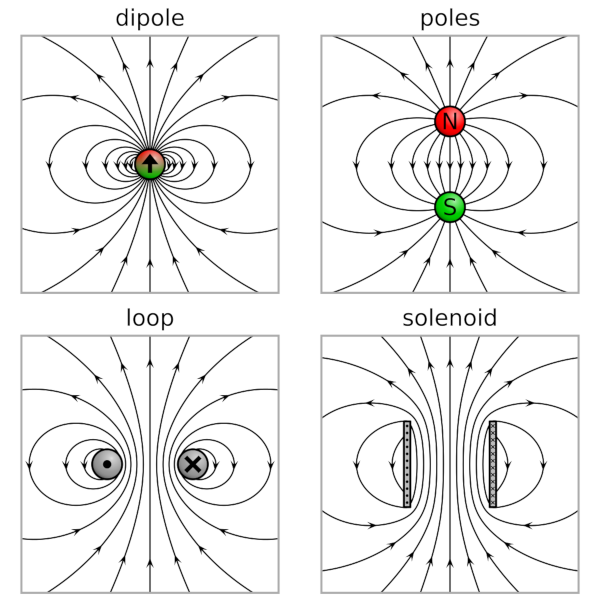 We can visualise a magnetic dipole as the field produced by a loop of current, \(I\), circling an orientable area, \(\mathbf{S}\). This gives us the definition of the magnetic dipole moment, analogous to the electric dipole moment: 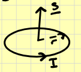 \[\mathbf{m}=I\mathbf{S}\] Using this definition of the magnetic dipole moment we can write the vector potential for a magnetic dipole as: \[\mathbf{A}=\frac{\mu_0}{4\pi}\frac{\mathbf{m}\times\mathbf{r}}{r^3}\] This is an a so‑called coordinate‑free form but let’s make our lives a little easier by placing the dipole moment along the \(z\) axis. \[\implies \mathbf{B}(r,\theta)=\frac{\mu_0m}{4\pi r^3}(2\cos\theta\;\mathbf{\hat{e}}_r+\sin\theta\;\mathbf{\hat{e}}_\theta)\] Magnetic dipoles also experience torques and forces just like electric dipoles. The torque on a magnetic dipole \(\mathbf{m}\) in a magnetic field \(\mathbf{B}\) is: \[\mathbf{N}=\mathbf{m}\times\mathbf{B}\] The force on a magnetic dipole in a field \(\mathbf{B}\) is given by: \[\mathbf{F}=(\mathbf{m}\cdot\nabla)\mathbf{B}\]
Magnetic Fields in Media
We have so far been working in free space, where the constant \(\mu_0\) is the permeability of free space, and in general we must consider the actual permeability of the medium, \(\mu\), and similar to electrostatics, we must use \(\mu\equiv\mu_r\mu_0\) in our equations, where μr is the relative permeability, defined relative to vacuum, s.t., \(\mu_r=1\), for a vacuum. The relative permeability characterises the ability of the medium to affect magnetic fields. Although magnetism is a common term in reality were are talking about the motion of charged particles ‑ usually electrons ‑ that carry a current. On an atomic scale electrons orbiting an atomic nucleus represent a current loop and so have a magnetic dipole moment. Usually these cancel out because of the random orientation of atoms and their current loops, but when we apply a magnetic field we get some net alignment and so the whole medium becomes magnetically polarised: it becomes magnetised. From a classical electromagnetic viewpoint we can classify media into three types: diamagnetic, paramagnetic and ferromagnetic.
Diamagnetic: where the induced magnetic dipole (magnetisation) is directed opposite to the external field.
Paramagnetic: the induced magnetic dipole is directed parallel to the external field and so this enhances the external field.
Ferromagnetic: the dipole moment exists even without the external field and the magnetisation is not proportional to the external field. In this case the media are not linear and outside of the scope of our course.
We define a magnetisation, \(\mathbf{M}\), as the magnetic dipole moment per unit volume. Without further proof we can state that if there is magnetisation \(\mathbf{M}\) then this will be associated with bound volume currents \[\mathbf{j}_b=\nabla\times\mathbf{M}\] and bound surface currents \[\mathbf{K}_b=\mathbf{M}\times\mathbf{\hat{n}}\] Inside a medium there may well be a regular current density, a conduction current density, that flows through the medium which we will term the free current \(\mathbf{j}_f\) . The curl of the total magnetic field then will be equal to the sum of these: \[\nabla\times\mathbf{B}=\mu_0(\mathbf{j}_f+\mathbf{j}_b)=\mu_0(\mathbf{j_f}+\nabla\times\mathbf{M})\] Rearranging to get the curls together: \[\nabla\times\left(\frac{\mathbf{B}}{\mu_0}-\mathbf{M}\right)=\mathbf{j}_f\] We can define the auxiliary field \(\mathbf{H}\) as \[\mathbf{H}=\frac{\mathbf{B}}{\mu_0}-\mathbf{M}\] And then we can write Ampere’s law as \[\nabla\times\mathbf{H}=\mathbf{j}_f\] Similar to electrostatics, we might consider media that are linear, such that the magnetisation is proportional to the (auxiliary) magnetic field strength with a constant called the magnetic susceptibility, \(\chi_M\) : \[\mathbf{M}=\chi_M\mathbf{H}\] hence \[\mathbf{B}=\mu_0(1+\chi_M)\mathbf{H}\] this provides our definition of the relative permeability \[\mu_r=1+\chi_M\] then the relationship between the magnetic field and the auxiliary field is: \[\mathbf{B}=\mu\mathbf{H}\]
Electrodynamics
Electrodynamics concerns situations of moving charges and changing currents.
Motional EMF
Michael Faraday made quantitative studies relating time‑dependent electric and magnetic fields in 1831. He observed that a transient current would be generated in a circuit under the following conditions
A steady current in an adjacent electric circuit was turned on or off.
An adjacent circuit with a steady current was moved relative to the first circuit
A permanent magnet was thrust in or out of the circuit
We can broadly describe these in terms of three experiments:
A circuit loop was moved at a speed \(\mathbf{v}\) relative to a stationary magnetic field (e.g., a magnet), \(\mathbf{B}\).
A magnet was moved at a speed \(\mathbf{v}\) relative to a stationary circuit loop.
The magnetic field threading a circuit loop changes in time.
The figure below illustrates these three experiments. 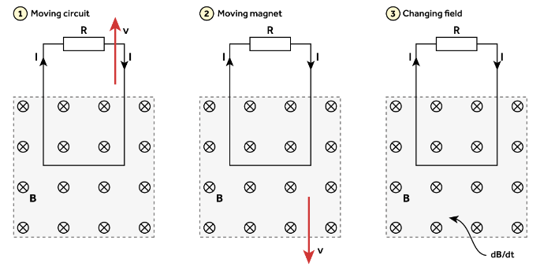
The Flux Rule
A loop of wire will have an EMF force induced when the flux through the loop changes with time \[\mathcal{E}=-\frac{d\Phi_B}{dt}\] This is often known as the “flux rule” and shows that the EMF can be written as a changing magnetic flux through a circuit.
Lenz's Law
Where does the negative sign come from in this equation for the EMF? If we evaluate the orientation of the magnetic field through the loop due to the current we find that it is opposite to the magnetic field. This is the essence of Lenz’s Law which states that the EMF is induced in such a direction as to oppose the change that created it ‑ in this scenario, the EMF is induced in such a direction to oppose the change in magnetic flux linking the circuit. As stated in Griffiths “Nature abhors a change in flux”.
The Lorentz Force and Special Relativity
Faraday explained the EMF in his experiments in terms of the rate of change of magnetic flux through each circuit. This is part of the “new physics” that was discovered by Faraday. But in experiment one we can equivalently look at the \(\mathbf{v}\times\mathbf{B}\) force per unit charge and work out the EMF. But in the second experiment above, where the circuit is stationary and the magnetic field moves in the opposite direction, the EMF is exactly the same! In the latter case, \(\mathbf{v}\times\mathbf{B}\) is zero as the charges are no longer moving! How do we explain this? In terms of relativity nothing has changed ‑ the charges and the magnetic field are still in relative motion. There are no new special forces due to a magnetic field moving relative to a charge. In the case of experiment two there is an electric field that pushes the charges. This is a relativistic effect. In PHYS232 we see how electric and magnetic transform under a Lorentz transformation. We consider two frames that are moving relative to each other at a velocity \(\mathbf{v}\). The electric and magnetic fields perpendicular to \(\mathbf{v}\) in the moving frame, \(\mathbf{E}'_\perp\) and \(\mathbf{B}'_\perp\), are related to those in the stationary frame, \(\mathbf{E}_\perp\) and \(\mathbf{B}_\perp\), by \[\begin{align} &\mathbf{E}'_\perp=\gamma(\mathbf{E}_\perp+\mathbf{v}\times\mathbf{B})\\ &\mathbf{B}'_\perp=\gamma(\mathbf{B}_\perp-\frac{1}{c^2}\mathbf{v}\times\mathbf{B}) \end{align}\] where \(\gamma\equiv(1-v^2/c^2)^{-1/2}\) is the gamma factor in S.R. In the low-velocity limit where \(v\lt \lt c\) we know that \(\gamma\to1\) and \(v^2/c^2\to0\). \[\begin{align} &\mathbf{E}'_\perp=\mathbf{E}_\perp+\mathbf{v}\times\mathbf{B}\\ &\mathbf{B}'_\perp=\mathbf{B} \end{align}\] Therefore, let’s look at Faraday’s Experiment two (where the magnetic field is moving). In the circuit, the perpendicular segments of the circuit are the top and bottom, but only the bottom part has a magnetic field threading through it. The electric field in the wire (which is at rest), \(\mathbf{E}_\perp\), is what we want, and if the electric field in the moving frame is zero \(\mathbf{E}'_\perp=0\) then the electric field in the wire will be. \[\mathbf{E}=-\mathbf{v}\times\mathbf{B}\] This will drive a current clockwise around the loop exactly in accordance with the predictions from the flux rule and Lenz’s law. Therefore, in Experiment One, the magnetic force is the force which pushes charges around the loop and generates the EMF, and in Experiment Two, the electric force, produced by the relative motion of the charges and the magnetic field, pushes charges around the loop.
Summary
To solve electrodynamic problems, as we will see shortly, we can either look at the forces on the charges or look at the changes in magnetic flux. Sometimes it is much easier to approach a problem by working out the change in flux, sometimes it is more physically appropriate to solve the problem by working out the forces on the charges. We first saw the EMF as the integral of a force per unit charge around a loop reproduced here: \[\mathcal{E}=\oint\mathbf{f}_{EMF}\cdot d\boldsymbol{\ell}\] Based on what we have seen, we can write this using the full Lorentz force: \[\mathcal{E}=\oint(\mathbf{E}+\mathbf{v}\times\mathbf{B})\cdot d\boldsymbol{\ell}\] But we usually see this force per unit charge as the electric field (indeed, Griffiths argues that in this case experiment 1 is not a demonstration of Faraday’s law, since there EMF is not associated with an electric field): \[\mathcal{E}=-\frac{d\Phi_B}{dt}=-\frac{d}{dt}\int\mathbf{B}\cdot d\mathbf{S}\] And so we can relate these together to get the form of Faraday’s Law: \[\oint \mathbf{E}\cdot d\boldsymbol{\ell}=-\frac{d}{dt}\int\mathbf{B}\cdot d\mathbf{S}\] The essential point for our purposes is that we can examine a configuration, such as the experiments above, and the examples in the next section, to determine:
Whether we need to apply the flux rule or look at the force on the charges (e.g., if a wire is moving) to calculate the EMF.
If we are using the flux then determine the direction of the EMF and hence the induced current using Lenz’s Law. Otherwise this will be given directly by the forces on the charges.
Determine the direction of any induced magnetic fields due to these induced currents (e.g., using the right‑hand grip rule).
Calculate forces using \(\mathbf{F}=Id\boldsymbol{\ell}\times\mathbf{B}\).
Examples of Electrodynamics
Simple Motors
The \(\mathbf{v}\times\mathbf{B}\) force acting on a current in a magnetic field provides the physical basis for a motor (and also a generator). The diagram below shows a cut through of a simple motor. 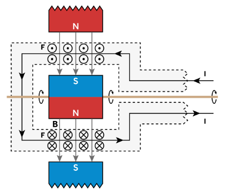 Let us consider Faraday’s experiment 1 here. We have a conductor moving in a magnetic field, which is similar to the circuit moving relative to a magnetic field. Therefore the charges will be exposed to an additional \(\mathbf{v}\times\mathbf{B}\) force which acts opposite to the direction of the current that is driving the motor! Hence, an EMF is generated due to the motion of the rotor, and this will drive a current in opposition to that which is causing the motor to turn! This EMF is known as a back EMF. At rest the back EMF is zero since the charges are not moving. If a potential difference, \(V\) , is applied to the terminals of the motor then a current, \(I=V/R\) , where \(R\) is the resistance of the motor, will flow and thus the rotor will start to turn. But now, the charges will experience a small force, proportional to the linear velocity of the rotor, and thus a small back EMF that opposes the potential difference applied to the motor, hence, the current in flowing in the motor then drops to \(I=(V−\mathcal{E}_\textrm{back})/R\). Without a load, and imagining for a second frictionless bearings and a lack of drag, the motor will continue to accelerate until the back EMF equals the applied voltage and the current will fall to zero. Of course, the motor speed might drop at this point, dropping the back EMF, and so some current will flow to speed it back up, and so on.
Jumping Ring
In this experiment a conducting ring is placed on top of a solenoid. A current is then turned on and passed through the solenoid thus producing a magnetic field along the axis of the solenoid. The conducting ring is propelled into the air. If the ring has a notch cut out of it then the ring does not leap into the air. 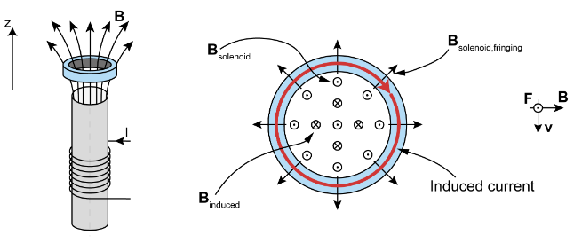 At some time the current is switched on and a magnetic field is generated by the solenoid. An infinite solenoid would generate a magnetic field \(\mathbf{B}=\mu_0nI_s\;\mathbf{\hat{e}}_z\) where \(n\) is the number of turns per unit length in the solenoid and \(I_s\) is the current flowing in the solenoid. However, this solenoid is finite and so at the ends of the solenoid the magnetic field also has a component perpendicular to the axis, in the \(\mathbf{\hat{e}}_s\) direction. This is generally known as the fringing field. When the solenoid is activated the flux will change through the conducting ring but the ring is at rest, therefore we should determine the EMF using the flux rule \[\mathcal{E}=-\frac{d}{dt}\int_S\mathbf{B}\cdot d\mathbf{S}\] From Lenz’s Law, the current induced in the ring will be generated in a direction to oppose the change, therefore we expect an induced magnetic field pointing downwards in \(−z\) to oppose the magnetic field from the solenoid. From the right‑hand grip rule we then expect the current to flow clockwise around the wire (as seen from above) in the \(‑\phi\) direction. Then, using \(\mathbf{v}\times\mathbf{B}\) we see that we have a force in the \(+z\) direction which causes the ring to jump into the air. If there was a notch cut out then the current could not flow and there would be no force and so no motion of the ring. We will write the field of the solenoid as a component pointing along the axis and a fringing field perpendicular that is some fraction k of the solenoid field: \[\mathbf{B}_\textrm{solenoid}=\mu_0nI_s(\mathbf{\hat{e}}_z+k\mathbf{\hat{e}}_s)\] for a ring of radius \(a\): \[\Phi_B=\mu_0\pi a^2nI_s\] We could consider that the magnetic flux goes from zero to this value in a small time \(\delta t\) but let’s assume that the current asymptotically reaches Is in a time scale \(T\): \[I_s(t)\to I_s\left(1-e^{-t/T}\right)\] Then: \[\Phi_B=\mu_0\pi a^2nI_s\left(1-e^{-t/T}\right)\] and then the EMF is: \[\mathcal{E}=-\frac{\mu_0\pi a^2nI_s}{T}e^{-t/T}\] Clearly, the shorter the time T the larger the EMF. \[@t=0:\quad I_\textrm{ring}=\frac{\mathcal{E}}{R}=-\frac{\mu_0\pi a^2nI_s}{RT}\] Now we can calculate the force. Since the force is created using the radial field, we only consider the fringing field. \[d\mathbf{F}=I_rdl \times\mu_0knI_s\;\mathbf{\hat{e}}_s\] he line element is around the ring, \(dl =ad\phi\mathbf{\hat{e}}_\phi\), in cylindrical coordinates and we integrate from \(0\) to \(2\pi\) around the ring (note that the negative sign from Ir cancels the negative sign from doing the cross product): \[\mathbf{F}=-\mu_0knI_sI_ra\mathbf{\hat{e}}_z\int_0^{2\pi}d\phi=\frac{2\pi^2\mu_0^2a^3kn^2I_s^2}{RT}\;\mathbf{\hat{e}}_z\] \[\mathbf{F}\propto\frac{a^3(nI_s)^2}{RT}\mathbf{\hat{e}}_z\]
Inductance and Magnetic Energy
Let’s revisit the concept of the back EMF which we encountered in a motor. In the figure below we have a circuit with a battery connected to a load (here just a resistor) via a switch.
At the start the switch is open and we have an open circuit, no current is flowing, and the current is not changing with time.
The switch is now closed and the circuit is closed. Current starts to flow in an anti‑clockwise sense and thus there is a magnetic field associated with the current and points out of the page through the circuit. But this change in magnetic flux linking the circuit is associated with an induced EMF, a back EMF. Via Lenz’ law, the EMF is in a direction to try to oppose the change in flux, and so tries to drive a current in the opposite sense through the loop (so to generate a field into the page).
After some time, the current settles down (becomes steady), the rate of change of current goes to zero, the rate of change of flux through the circuit falls to zero, and the EMF disappears.
Then the switch is opened and the current falls to zero, but this change in current then rapidly changes the flux through the circuit and an EMF is induced in the opposite direction to try to keep the flux constant through the loop. Of course, the circuit is open and so no current can flow, but in some circuits the forward EMF can be so large that the voltage across open parts of the circuit can cause an electrical arc.
This phenomenon is known as self‑inductance, where changes in current through a circuit induces an EMF. One might also consider this as a form of resistance to changing currents. The induced EMF is proportional to the rate of change of the current, with a proportionality constant, \(L\), known as the inductance (or sometimes self‑inductance in this situation), and can be written as: \[\mathcal{E}=-L\frac{dI}{dt}=-\frac{d\Phi}{dt}\] If we integrate this in time and rearrange we just get: \[L=\frac{\Phi}{I}\] The inductance is a geometrical quantity related to the configuration of the circuit and has units of the ‘Henry’ where \(1\textrm{H}=\textrm{V s A}^{−1}\). There are specific electrical components known as inductors but self‑inductance is a property of any circuit, although usually small.
Mutual Inductance
Recall one of Faraday’s discoveries. Faraday did an experiment with two separate circuits, A and B, and found that if the current changed in circuit, A, then a transient current was observed in B. In the language of induction and EMFs, the changing current in circuit A changed the magnetic flux through circuit B, and so an EMF was induced, thus driving the transient current. This is the phenomenon of mutual inductance. If flux from one circuit passes through another circuit, then changes in the current in one circuit can produce EMFs in the other circuit. The EMF is still proportional to the rate of change of current, but instead of the inductance, \(L\), we use a quantity known as the mutual inductance, \(M\) , which depends on the geometry of both circuits. If we have two loops and run a current through the first, we have \[\Phi_1=\int\mathbf{B}_1\cdot d\mathbf{S}_1\qquad \Phi_2=\int\mathbf{B}_1\cdot d\mathbf{S}_2\] 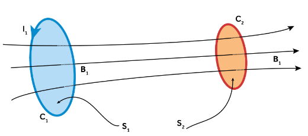 Our goal is to obtain an expression for the inductance, so that we can write the flux as the product of the inductance and the current: \(\phi=MI\). To make progress on this, we rewrite the flux in the second loop using the vector potential due to the current loop, \(C_1\). \[\Phi_2=\int(\nabla\times\mathbf{A}_1)\cdot d\mathbf{S}_2\] Applying Stokes Theorem to this integral: \[\Phi_2=\oint{A}_1\cdot d\boldsymbol{\ell}_2\] The vector potential at a point on loop 2, with position vector, \(\mathbf{r}_2\), associated with a current loop is simply the line integral (using \(\mathbf{j}d\tau=Id\boldsymbol{\ell}\) and the general formula for \(\mathbf{A}\)) \[\mathbf{A}_1(\mathbf{r}_2)=\frac{\mu_0I_1}{4\pi}\oint_{C_1}\frac{d\boldsymbol{\ell}}{|\mathbf{r}_1-\mathbf{r}_2|}\] The denominator in this integral is over position vectors on both loops since the vector potential at a point, \(\mathbf{r}_2\) on loop 2, is due to the integration over all the current elements in loop 1, with position vectors, \(\mathbf{r}_1\). Hence \[\Phi_2=I_1\frac{\mu_0}{4\pi}\oint_{C_1}\oint_{C_2}\frac{d\boldsymbol{\ell}_1\cdot d\boldsymbol{\ell}_2}{|\mathbf{r}_1-\mathbf{r}_2|}\] Hence, we’ve derived an expression for the flux through loop 2, in terms of the current in loop 1 and a factor which is entirely related to the geometry and relative positions of the two loops. This is known as the Neumann formula for calculating mutual inductance. \[M\equiv M_{21}=M_{12}=\frac{\mu_0}{4\pi}\oint_{C_1}\oint_{C_2}\frac{d\boldsymbol{\ell}_1\cdot d\boldsymbol{\ell}_2}{|\mathbf{r}_1-\mathbf{r}_2|}\] A very useful property of the mutual inductance is that it is independent of which loop carries a current. So we can write: \(\Phi_2=MI_1\) and \(\Phi_1=MI_2\). With this derivation, we can also see the origin of the EMF and the self‑inductance. If we differentiate this expression for the flux, and if the geometry of the loops is constant, then: \[\frac{d\Phi}{dt}=M\frac{dI}{dt}\implies\mathcal{E}=-M\frac{dI}{dt}\]
Energy Stored in the Magnetic field
We saw that as the magnetic field is setup, an EMF opposes this change in magnetic flux and so work has to be done in opposing this. So as a circuit is ‘powered up’, and we start to drive current through the circuit, the circuit resists this change in current via induction. The energy used to oppose the induced EMF is not lost, but is stored in the magnetic field and can be released when the circuit is ‘powered down’. Let’s calculate this energy. \[\frac{dW}{dt}=-\mathcal{E}I=LI\frac{dI}{dt}\] Then a small change in current, \(dI\), results in a small amount of work done, \(dW=LIdI\). Integrating from a current, \(I=0\), to \(I=I\): \[W=\frac{LI^2}{2}\] It would useful to eliminate the current and just consider the magnetic field, so let’s recognise that \(\Phi=LI\) to write: \[W=\frac{I\Phi}{2}\] We can find the flux in terms of the vector potential: \[W=\frac{1}{2\mu_0}\int_\textrm{all space}\mathbf{B}\cdot\mathbf{B}d\tau\]
Faraday’s law in differential form
We have \[\mathcal{E}=\oint\mathbf{E}\cdot d\boldsymbol{\ell}=-\frac{\partial}{\partial t}\int\mathbf{B}\cdot d\mathbf{S}\] We can use stokes theorem on the middle term \[\int(\nabla\times\mathbf{E})\cdot d\mathbf{S}=-\int\frac{\partial\mathbf{B}}{\partial t}\cdot d\mathbf{S}\] hence \[\nabla\times\mathbf{E}=-\frac{\partial\mathbf{B}}{\partial t}\]
Maxwell's Equations
The Displacement Current
Maxwell noted that Faraday’s law and Ampere’s law were asymmetrical. Faraday’s law has a \(\partial_t\mathbf{B}\) term but is homogeneous, and there isn’t a \(\partial_t\mathbf{E}\) term in Ampere’s law yet it is inhomogeneous: \[\begin{array}{lrl} \nabla\times\mathbf{E}+\frac{\partial\mathbf{B}}{\partial t}&=&\mathbf{0}&\\ \nabla\times\mathbf{B}&=&\mu_0\mathbf{j} \end{array}\] Maxwell added a time derivative to Ampere’s law which we call the Displacement Current. To show why we must add an additional term, let’s take the divergence of Ampere’s Law \[\nabla\cdot(\nabla\times\mathbf{B})=\mu_0\nabla\cdot\mathbf{j}\] The divergence of a curl is zero, \(\nabla\cdot(\nabla\times\mathbf{B})=0\). So the divergence of the current density should be zero. As we have seen, this is true for steady currents, but in the time‑dependent case we cannot guarantee this. We looked at the continuity equation for current density and found that: \[\nabla\cdot\mathbf{j}+\frac{\partial\rho}{\partial t}=0\] we know that \(\epsilon_0\nabla\cdot\mathbf{E}=\rho\) hence, \[\nabla\cdot\mathbf{j}=-\frac{\partial(\epsilon_0\nabla\cdot\mathbf{E})}{\partial t}=-\nabla\cdot\left(\epsilon_0\frac{\partial\mathbf{E}}{\partial t}\right)\] This gives us a term that we could add to the divergence of Ampere’s Law to regain the consistency. \[\nabla\cdot(\nabla\times\mathbf{B})=\mu_0\left[\nabla\cdot\mathbf{j}+\nabla\cdot\left(\epsilon_0\frac{\partial\mathbf{E}}{\partial t}\right)\right]=0\] or \[\nabla\cdot(\nabla\times\mathbf{B})=\mu_0\nabla\cdot\left(\mathbf{j}+\epsilon_0\frac{\partial\mathbf{E}}{\partial t}\right)=0\] Thus, the quantity \(\epsilon_0\partial_t\mathbf{E}\) has dimensions of current we call this the displacement current and we end up with a revised version of Ampere’s Law known as the Ampere‑Maxwell Law: \[\boxed{\nabla\times\mathbf{B}-\mu_0\epsilon_0\frac{\partial\mathbf{E}}{\partial t}=\mu_0\mathbf{j}}\]
Maxwell's Equations
Thus we have our complete set of Maxwell’s equations, in their time‑dependent form. Due to the displacement current, we refer to the equation for \(\nabla\times\mathbf{B}\) as the Ampere‑Maxwell Law. This now produces a pleasing symmetry in Maxwell’s equations.
Homogeneous Equations
Inhomogeneous (sourced)
Scalar Equations
No Monopoles \[\nabla\cdot\mathbf{B}=0\]
Gauss's Law \[\nabla\cdot\mathbf{E}=\frac{\rho}{\epsilon_0}\]
Vector Equations
Faraday's Law \[\nabla\times\mathbf{E}+\frac{\partial\mathbf{B}}{\partial t}=\mathbf{0}\]
Ampere-Maxwell's Law \[\nabla\times\mathbf{B}-\mu_0\epsilon_0\frac{\partial\mathbf{E}}{\partial t}=\mu_0\mathbf{j}\]
As we have seen, the equations in integral form can be obtained from the equations in differential form using the various theorems of vector calculus, as we have done numerous times in electrostatics and magnetostatics. The equations in integral form are:
Homogeneous Equations
Inhomogeneous (sourced)
No Monopoles \[\oint_S\mathbf{B}\cdot d\mathbf{S}=0\]
Gauss's Law \[\oint_S\mathbf{E}\cdot d\mathbf{S}=\frac{Q_{enc}}{\epsilon_0}\]
Faraday's Law \[\oint_C\mathbf{E}\cdot d\boldsymbol{\ell}+\frac{d}{dt}\int_S\mathbf{B}\cdot d\mathbf{S}=0\]
Ampere-Maxwell's Law \[\oint_C\mathbf{B}\cdot d\boldsymbol{\ell}-\mu_0\epsilon_0\frac{d}{dt}\int_S\mathbf{E}\cdot d\mathbf{S}=\mu_0I_{enc}\]
Potentials and Gauge Invariance
We have seen two types of potential in our studies of electrostatics and magnetostatics
When \(\nabla\times\mathbf{E}=0\) we can write that \(\mathbf{E}=-\nabla V\).
When \(\nabla\cdot\mathbf{B}=0\) we can write \(\mathbf{B}=\nabla\times\mathbf{A}\).
In these circumstances it is always possible to find potentials that satisfy these equations. In electrostatics and magnetostatics we considered these as convenient methods for finding the fields from something that was, in some cases, more convenient. In the time dependent case the magnetic field appears in Faraday’s law, and the electric field appears in the Ampere‑Maxwell Law. So the potentials can also appear there. Applying this idea to Faraday’s law we have \[\nabla\times\mathbf{E}+\frac{\partial}{\partial t}(\nabla\times\mathbf{A})=0\] Commute the derivatives: \[\nabla\times\left(\mathbf{E}+\frac{\partial\mathbf{A}}{\partial t}\right)=0\] But we know that the curl of a grad is a null vector, \(\nabla\times\nabla f=\mathbf{0}\), hence we can write the expression in the brackets as the grad of a scalar potential, \(V\): \[\begin{align} &\left(\mathbf{E}+\frac{\partial\mathbf{A}}{\partial t}\right)=-\nabla V\\ &\implies\mathbf{E}=-\nabla V-\frac{\partial\mathbf{A}}{\partial t} \end{align}\] So in the time dependent case we can write the electric field as (minus) the grad of a scalar potential minus the rate of change of the vector potential. The second term here represents the part of the electric field that has curl. This includes two of M.'s laws. What about the other two? \[\begin{align} &\nabla\cdot\left(-\nabla V-\frac{\partial\mathbf{A}}{\partial t}\right)=\frac{\rho}{\epsilon_0}\\ &\implies\nabla^2V=-\frac{\rho}{\epsilon_0}-\nabla\cdot\frac{\partial\mathbf{A}}{\partial t} \end{align}\] we can substitute the E field into the A-M law, manipulate, and find \[\nabla^2\mathbf{A}-\mu_0\epsilon_0\;\partial^2_t\mathbf{A}=-\mu_0\mathbf{j}+\nabla(\nabla\cdot\mathbf{A}+\mu_0\epsilon_0\;\partial_tV)\]
Gauge Transforms and Gauge Invariance
Because \(\mathbf{E}=−\nabla V\) we could add any constant to \(V\) and still get the same electric field. It was invariant to the addition of a constant and so the potential was not unique.
Because \(\nabla\cdot\mathbf{B},\;\;\mathbf{B}=\nabla\times\mathbf{A}\) we can add any curl‑free field to A and still get the same magnetic field. It was invariant to the addition of a curl free vector field and so the potential was not unique.
In general, we can transform the potentials as follows: \[\begin{align} \mathbf{A}\to\mathbf{A}+\nabla f(\mathbf{r},t)\\ V\to V-\frac{\partial f(\mathbf{r},t)}{\partial t} \end{align}\] We call this transformation a gauge transformation and thus Maxwell’s equations are gauge invariant.
Coulomb Gauge
The choice \(\nabla\cdot\mathbf{A}=0\) is known as the Coulomb gauge and is usually used for static situations as it simplifies calculations under those conditions.
The Lorenz Gauge
In non‑static situations a different choice of gauge is more helpful and the Lorenz gauge (not not Lorentz!) is often used: \[\nabla\cdot\mathbf{A}=-\epsilon_0\mu_0\partial_t V\] This is designed to remove the difficult gradient term on the RHS of our potential equation.
Poynting's Theorem
An equation describing energy conservation. We want it of the form: \[\textrm{energy in}-\textrm{heat}=\textrm{energy stored}+\textrm{energy radiated}\] We are going to find that it has the form of a continuity equation. We have previously derived that the energy stored in electric and magnetic fields was the integrals of \(\frac{\epsilon_0}{2}\mathbf{E}\cdot\mathbf{E}\) and \(\frac{1}{2\mu_0}\mathbf{B}\cdot\mathbf{B}\) respectively. This implies that the energy stored in the EM field is \[U_{EM}=\int_\tau\left(\frac{1}{2\mu_0\mu_r}\mathbf{B}\cdot\mathbf{B}+\frac{\epsilon_0\epsilon_r}{2}\mathbf{E}\cdot\mathbf{E}\right)d\tau\] We are going to consider this from another perspective and derive Poynting’s Theorem which is an equation expressing the conservation of energy in EM fields. \[\int_\tau\left[\mathbf{j}\cdot\mathbf{E}_{EMF}-\frac{\mathbf{j}\cdot\mathbf{j}}{\sigma}\right]d\tau=\frac{\partial U_{EM}}{\partial t}+\frac{1}{\mu_0}\oint_S(\mathbf{E}\times\mathbf{B})\cdot d\mathbf{S}\] The LHS side is the rate at which electromagnetic energy is created inside our volume, the RHS expresses the idea that this energy can either be stored in the electromagnetic field within the volume, or be radiated (as electromagnetic waves) through the surface bounding the volume.
The LHS is the rate at which energy is being supplied by external sources minus the rate at which energy is being lost due to Joule heating.
The first term on the RHS is the rate of change of electromagnetic energy (stored in the field).
The second term on the RHS is the flow of electromagnetic power across the surface (in or out) This energy is transported in the form of electromagnetic waves that we will consider in the following chapter.
Stored Energy and the Poynting Vector
The rate at which energy flows in/out of the volume is given by the second term on the RHS of Poynting’s Theorem: \[\oint_S\left(\frac{\mathbf{E}\times\mathbf{B}}{\mu_0}\right)\cdot d\mathbf{S}\] The quantity in brackets is the Poynting Vector, sometimes given then symbol \(\mathbf{S}\) but here we will use \(\mathbf{N}\) as we have used \(\mathbf{S}\) extensively for surfaces: \[\mathbf{N}=\frac{\mathbf{E}\times\mathbf{B}}{\mu_0}=\mathbf{E}\times\mathbf{H}\] and is a vector that describes the flow of electromagnetic energy: it has dimensions of power per unit area. Integrating the Poynting vector over a surface gives the Poynting Flux ‑ the energy flowing in/out of a volume. Hence, we can compactly write Poynting’s Theorem as: \[\int_\tau\left[\mathbf{j}\cdot\mathbf{E}_{EMF}-\frac{\mathbf{j}\cdot\mathbf{j}}{\sigma}\right]d\tau=\frac{\partial U_{EM}}{\partial t}+\oint_S\mathbf{N}\cdot d\mathbf{S}\]
Differential Form
We can also derive a differential form of Poynting’s Theorem from the integral form we’ve been working with: \[-\frac{du_{EM}}{dt}=\mathbf{j}\cdot\mathbf{E}+\nabla\cdot\mathbf{N}\]
Boundary Conditions
Consider electric and magnetic fields that exist across the interface between two different media, 1, and 2. In general the electric and magnetic fields will be discontinuous at the boundary between two media or at a charged surface or with current. Split the electric and magnetic field into components that are perpendicular (normal) to a boundary and parallel (tangential). The question we must address is how do the normal and tangential components behave across boundaries between different media? We find
We have the hyperbolic PDE: the wave equation \[\left(\nabla^2-\frac{1}{c^2}\frac{\partial^2}{\partial t^2}\right)f=\square f=0\] A function such as \(f(x,t)=e^{-i(k_xx-\omega t)}\) where \(k_x\) is the wavenumber in the \(x\)-direction and \(\omega\) is the frequency of the wave, satisfies the 1D wave equation. It can be shown that \(c^2=\frac{\omega^2}{k_x^2}\) which is the phase speed. Note \(\square\) is d'Alembert's operator, which we will not use. We can express Maxwell's equations with \(\mathbf{j}=\mathbf{0}\) and \(\rho=0\) then take the curl of both sides of faradays law to combine it with the A-M law to find \[\nabla\times(\nabla\times\mathbf{E})=-\frac{\partial}{\partial t}(\nabla\times\mathbf{B})=-\frac{\partial}{\partial t}\left[\mu_0\epsilon_0\frac{\partial\mathbf{E}}{\partial t}\right]\] We can use \(\nabla^2\mathbf{E}=\nabla(\nabla\cdot\mathbf{E})-\nabla\times(\nabla\times\mathbf{E})\) (and that \(\nabla\cdot\mathbf{E}=0\) as \(\rho=0\)) to find \[\nabla^2\mathbf{E}-\mu_0\epsilon_0\frac{\partial^2\mathbf{E}}{\partial t^2}=0\] and that \[\nabla^2\mathbf{B}-\mu_0\epsilon_0\frac{\partial^2\mathbf{B}}{\partial t^2}=0\] Hence, we have expressions for \(\mathbf{E}\) and \(\mathbf{B}\) that are in the form of wave equations! Also note that, without the displacement current term, it would not have been possible to derive these equations! We can clearly see that \[\mu_0\epsilon_0=\frac{1}{c^2}\]
EM Plane Waves
Plane Geometry
To proceed, we shall use planes. We can define a plane via it’s normal vector combined with a vector to a point on the plane. Let’s describe the unit normal vector to the plane as \(\mathbf{\hat{n}}=n_x\mathbf{\hat{i}}+n_y\mathbf{\hat{j}}+n_z\mathbf{\hat{k}}\), such that \(\mathbf{\hat{n}}\cdot\mathbf{\hat{n}}= n_x^2+n_y^2+n^2_z=1\), and define a point, \(P\), on the plane with a position vector \(\mathbf{r}\). For any such point, \(P\), it can be shown that the condition \(\mathbf{r}\cdot\mathbf{\hat{n}}=|\mathbf{r}|\cos\beta=h\) where \(h=\textrm{constant}\) uniquely defines the plane. 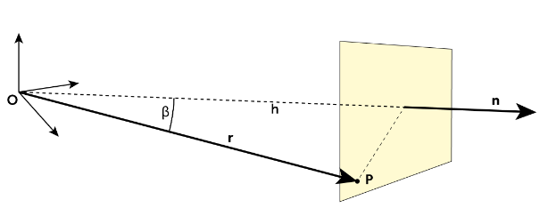 What if \(h\) varies in time? For example, what if \(h\) increases with a speed \(c\) so that at time \(t\) we can write \(h=ct\). Then this represents a plane moving at a speed \(c\), along \(\mathbf{\hat{n}}\), either away from the origin if \(h\gt 0\) or toward the origin \(h \lt 0\). Therefore we can describe a plane with a normal \(\mathbf{\hat{n}}\) moving at a speed \(c\) as \[\mathbf{r}\cdot\mathbf{\hat{n}}-ct=0.\] We can define \(\alpha=\mathbf{r}\cdot\mathbf{\hat{n}}-ct=xn_x+yn_y+zn_z-ct\) as some scalar variable, and an arbitrary function \(f(\alpha)\). Using the chain rule we find that \[\frac{\partial f(\alpha)}{\partial x}=\frac{df}{d\alpha}\frac{\partial\alpha}{\partial x}=n_x\frac{df}{d\alpha}.\] This gives us \[\begin{align} &\partial_x^2f=n_x^2\;d^2_\alpha f\qquad\qquad \partial_y^2f=n_y^2\;d^2_\alpha f\\ &\partial_z^2f=n_z^2\;d^2_\alpha f\qquad\qquad \partial_t^2f=c^2\;d^2_\alpha f\\ \end{align}\] Therefore, we have all the terms to substitute into the wave equation where we see that the last bracket is just zero, since \(\mathbf{\hat{n}}\) is a unit vector with length 1 and obviously the second term is unity. \[\left(\nabla^2-\frac{1}{c^2}\frac{\partial^2}{\partial t^2}\right)f(\alpha)=\left(n_x^2+n_y^2+n_z^2-\frac{c^2}{c^2}\right)\frac{d^2f}{d\alpha^2}=0\] Hence, any function \(f(\alpha)\), satisfies the wave equation with matching speed \(c\), and therefore any function of a combination of variables \(\mathbf{r}\cdot\mathbf{\hat{n}}−ct\) describes a plane wave moving with speed \(c\).
EM Plane Wave Solutions
Combining these results we have thus found that electric and magnetic fields separately satisfy our wave equation: \[\mathbf{E}(\mathbf{r}\cdot\mathbf{\hat{n}}-ct)\qquad\qquad\mathbf{B}(\mathbf{r}\cdot\mathbf{\hat{n}}-ct)\] and thus they describe the wavefronts, moving in time in the direction \(\mathbf{\hat{n}}\) with speed \(c\). However, these do not yet describe propagating electromagnetic waves since the fields are coupled together. We must understand how they are coupled because whilst we could find a solution to one of these wave equations, for example for \(\mathbf{E}\), the solution would also have to satisfy Maxwell’s equations. We can consider the divergence and curl of a vector \(\mathbf{A}\) and use the notation \(d_\alpha\mathbf{A}=\mathbf{A}'\): \[\nabla\cdot\mathbf{A}=n_x\mathbf{A}'+n_y\mathbf{A}'+n_z\mathbf{A}'=\mathbf{\hat{n}}\cdot\mathbf{A}'\] \[\begin{align} &[\nabla\times\mathbf{A}]_x=\frac{\partial A_z}{\partial y}-\frac{\partial A_y}{\partial z}=n_y\frac{dA_z}{d\alpha}-n_z\frac{dA_y}{d\alpha}=[\mathbf{\hat{n}}\times\mathbf{A}']_x\\ &\implies\nabla\times\mathbf{A}=\mathbf{\hat{n}}\times\mathbf{A}' \end{align}\] These are very convenient for M's equations. To be able to apply this to Maxwell’s equations we also need to complement these with the time derivative: \[\frac{\partial\mathbf{A}}{\partial t}=\mathbf{A}'\frac{\partial\alpha}{\partial t}=-c\mathbf{A}'\] Hence \[\begin{align} &\nabla\times\mathbf{B}=\mu_0\epsilon_0\frac{\partial\mathbf{E}}{\partial t}\to\mathbf{\hat{n}}\times\mathbf{B}'=-\mu_0\epsilon_0c\mathbf{E}'\\ &\nabla\times\mathbf{E}=-\frac{\partial\mathbf{B}}{\partial t}\to\mathbf{\hat{n}}\times\mathbf{E}'=c\mathbf{B}' \end{align}\] after tidy up \[\begin{align} &\mathbf{E}'=-c(\mathbf{\hat{n}}\times\mathbf{B}')\\ &\mathbf{B}'=\frac{1}{c}(\mathbf{\hat{n}}\times\mathbf{E}') \end{align}\] Since the normal vector is a constant we can integrate over the derivatives with respect to \(\alpha\) (any integration constants vanish for propagating solutions) to leave: \[\begin{align} &\mathbf{E}=-c(\mathbf{\hat{n}}\times\mathbf{B})\\ &\mathbf{B}=\frac{1}{c}(\mathbf{\hat{n}}\times\mathbf{E}) \end{align}\] Applying the same logic to the divergences: \[\nabla\cdot(\mathbf{E}\textrm{ or }\mathbf{B})=0\to\mathbf{\hat{n}} \cdot(\mathbf{E}\textrm{ or }\mathbf{B})=0\] What have we found from this? In free space (a vacuum):
In a plane EM wave, electric field, magnetic field and normal vector are mutually‑perpendicular and form a right‑handed set of orthogonal vectors at each point.
The electric field and the magnetic field are both perpendicular to the normal vector: hence the waves are transverse (the oscillation is perpendicular to the direction of propagation).
The electric and magnetic fields are perpendicular to each other.
The diagram below illustrates these relationships. If the magnitude of the electric field is \(E_0\) then the magnitude of the magnetic field will be given by \(E_0/c\) from \(\mathbf{B}=(\mathbf{\hat{n}}\times\mathbf{E})/c\). We can also see that the Poynting Vector, \(\mathbf{N}=\mathbf{E}\times\mathbf{H}\) is parallel to the direction of propagation of the wave, \(\mathbf{\hat{n}}\), as we would expect if the Poynting vector was associated with the flow of electromagnetic energy! 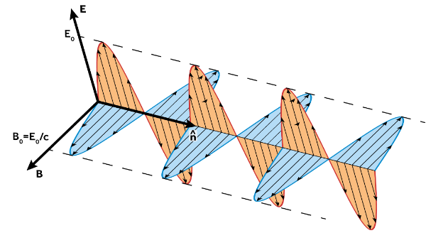
Monochromatic Plane Waves in Vacuum
We define a monochromatic plane wave as a periodic plane wave with a wavelength, \(\lambda\), and frequency, \(f\) . We use a complex number representation to describe these waves and include our relationship between the (complex) electric field, \(\tilde{\mathbf{E}}\), and the magnetic field, \(\tilde{\mathbf{B}}\), but where the actual fields we would observe are the real components of these vectors: \[\begin{align} &\tilde{\mathbf{E}}(\mathbf{r}\cdot\mathbf{\hat{n}},t)=\tilde{\mathbf{E}}_0\exp\left[i\frac{2\pi}{\lambda}(\mathbf{r}\cdot\mathbf{\hat{n}}-ct)\right]\\ &\tilde{\mathbf{B}}(\mathbf{r}\cdot\mathbf{\hat{n}},t)=\tilde{\mathbf{B}}_0\exp\left[i\frac{2\pi}{\lambda}(\mathbf{r}\cdot\mathbf{\hat{n}}-ct)\right]\\ \end{align}\] where we can use \(\tilde{\mathbf{B}}_0=\frac{1}{c}\mathbf{\hat{n}}\times\tilde{\mathbf{E}}_0\). To make the notation more compact we can combine with the factor of \(2\pi\) to define:
The wave number \(k=2\pi/\lambda\)
The wave vector \(\mathbf{k}=k\mathbf{\hat{n}}\)
The angular frequency \(\omega=2\pi f=ck=c|\mathbf{k}|\)
Therefore \[\begin{align} &\tilde{\mathbf{E}}=\tilde{\mathbf{E}}_0e^{i(\mathbf{k}\cdot\mathbf{r}-\omega t)}\\ &\tilde{\mathbf{B}}=\tilde{\mathbf{B}}_0e^{i(\mathbf{k}\cdot\mathbf{r}-\omega t)} \end{align}\] We can relate the amplitudes by \(\mathbf{k}/k=k\lambda/2\pi=\mathbf{\hat{n}}\) therefore: \[\omega\tilde{\mathbf{B}}_0=\mathbf{k}\times\tilde{\mathbf{E}}_0\] The factor in the exponentials, \(\mathbf{k}\cdot\mathbf{r}=\omega t\), is often known as the phase of the oscillation. Note that the electric field and the magnetic fields are in phase with each other.
Impedance of Free Space
As noted above, Maxwell’s equations relate the electric and magnetic fields for plane electromagnetic waves. Using above we can write, \(|\mathbf{E}|=c|\mathbf{B}|\). In a vacuum we can write \(\mathbf{B}=\mu_0\mathbf{H}\) and therefore \(|\mathbf{E}|=c\mu_0|\mathbf{H}|\). We define the impedance of free space as: \[Z_0=\frac{|\mathbf{E}|}{|\mathbf{H}|}=c\mu_0=\sqrt{\frac{\mu_0}{\epsilon_0}}\approx376.7\Omega\]
Momentum and Pressure of EM Waves
The electric field in the wave generates a current parallel to the electric field in the wave, \(\mathbf{j}=\sigma\mathbf{E}\). But this current is in the presence of the magnetic field, which is perpendicular to the current and so is subject to a magnetic force: \(\mathbf{j}\times\mathbf{B}\). The force applied to the conductor is perpendicular to the surface and acts in the direction of wave propagation. This force can communicate momentum to the conductor and thus, via the conservation of momentum, implies that the electromagnetic wave carries mechanical momentum. We find \[-\dv{t}\{\text{momentum}\}=\epsilon_0\mu_0\dv{t}\int_\tau\vb{N}\dd{\tau}+\oint_S\left(\frac{1}{2}\vb{B}\cdot\vb{B}+\frac{\epsilon_0}{2}\vb{E}\cdot\vb{E}\right)\dd{S}\] where the first term is the rate of change of mechanical momentum stored in the electromagnetic field and \(\epsilon_0\mu_0\vb{N}=\epsilon_0\vb{E}\times\vb{B}\) is the momentum density stored in the fields. The second term is the integrated momentum flowing in/out of the volume over its surface and is related to the radiation pressure that is experienced by a surface illuminated by electromagnetic waves. It can be shown that the radiation pressure is equal to: \[\frac{\vb{B}\cdot\vb{B}}{2\mu_0}+\frac{\epsilon\vb{E}\cdot\vb{E}}{2}\] which is clearly related to the energy, \(U_\text{EM}\), we derived earlier and has dimensions of energy density, which is the same as pressure. Therefore, we have discussed two theorems relating energy and momentum in electromagnetic waves, Poynting’s theorem for energy conservation, and the above for momentum conservation.